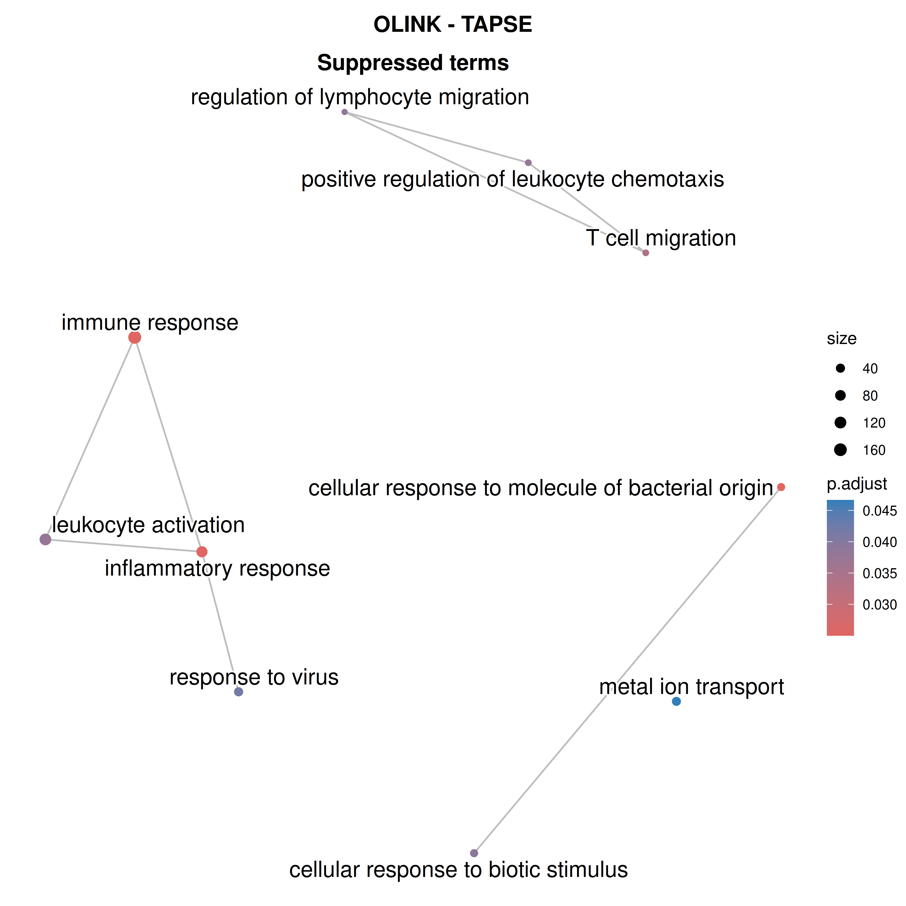

Last updated: 2026-04-21
Checks: 7 0
Knit directory: DCM_snRNAseq/
This reproducible R Markdown analysis was created with workflowr (version 1.7.2). The Checks tab describes the reproducibility checks that were applied when the results were created. The Past versions tab lists the development history.
Great! Since the R Markdown file has been committed to the Git repository, you know the exact version of the code that produced these results.
Great job! The global environment was empty. Objects defined in the global environment can affect the analysis in your R Markdown file in unknown ways. For reproduciblity it’s best to always run the code in an empty environment.
The command set.seed(20240606) was run prior to running
the code in the R Markdown file. Setting a seed ensures that any results
that rely on randomness, e.g. subsampling or permutations, are
reproducible.
Great job! Recording the operating system, R version, and package versions is critical for reproducibility.
Nice! There were no cached chunks for this analysis, so you can be confident that you successfully produced the results during this run.
Great job! Using relative paths to the files within your workflowr project makes it easier to run your code on other machines.
Great! You are using Git for version control. Tracking code development and connecting the code version to the results is critical for reproducibility.
The results in this page were generated with repository version 872b785. See the Past versions tab to see a history of the changes made to the R Markdown and HTML files.
Note that you need to be careful to ensure that all relevant files for
the analysis have been committed to Git prior to generating the results
(you can use wflow_publish or
wflow_git_commit). workflowr only checks the R Markdown
file, but you know if there are other scripts or data files that it
depends on. Below is the status of the Git repository when the results
were generated:
Ignored files:
Ignored: .Rhistory
Ignored: .Rproj.user/
Ignored: output/CellChat/
Ignored: output/Cell_cell_communication_Macrophages/
Ignored: output/Chaffin_2022/
Ignored: output/Comparison_RV_bulk_RNAseq/
Ignored: output/Koenig_2022/
Ignored: output/SSc_PAH/
Ignored: output/Variance_partitioning/
Untracked files:
Untracked: .Rprofile
Untracked: Chaffin_wilcox.csv
Untracked: GRCh38-2020-A_build/
Untracked: Koenig_wilcox.csv
Untracked: analysis/Chaffin_2022.Rmd
Untracked: analysis/Check_IMC_panel.Rmd
Untracked: analysis/Comparison_RV_bulk_RNAseq.Rmd
Untracked: analysis/DE_Fibrosis_fibroblasts.Rmd
Untracked: analysis/DE_Group_all_cell_types.Rmd
Untracked: analysis/EC_capillary_angiogenic_boxplot_stats.csv
Untracked: analysis/Endothelial_cells_SGLT2_I.Rmd
Untracked: analysis/Fibroblasts_DA_DE_26.Rmd
Untracked: analysis/Genes_Luxembourg.Rmd
Untracked: analysis/HC_DEGs_clustering.Rmd
Untracked: analysis/Koenig_2022.Rmd
Untracked: analysis/Mass_Spec_RV_dysf.Rmd
Untracked: analysis/Mass_Spec_proteomics.Rmd
Untracked: analysis/Mass_Spec_proteomics_2.Rmd
Untracked: analysis/Mass_Spec_proteomics_3.Rmd
Untracked: analysis/Olink_RV_dysf.Rmd
Untracked: analysis/Olink_SSc_PAH.Rmd
Untracked: analysis/Olink_SSc_PAH_draft.Rmd
Untracked: analysis/Olink_proteomics_2.Rmd
Untracked: analysis/Proteomics_combined.Rmd
Untracked: analysis/Proteomics_combined_2.Rmd
Untracked: analysis/Pseudobulk_all.csv
Untracked: analysis/Pseudobulk_all_2.csv
Untracked: analysis/Pseudobulk_byCellType_facetGrid.pdf
Untracked: analysis/Pseudobulk_byCellType_filtered_wrap3col.pdf
Untracked: analysis/Pseudobulk_byCellType_filtered_wrap3col_proportional.pdf
Untracked: analysis/Pseudobulk_byCellType_wilcox.csv
Untracked: analysis/Pseudobulk_byCellType_wilcox.filtered.csv
Untracked: analysis/Pseudobulk_byCellType_wilcox_2.csv
Untracked: analysis/QC_integration_annotation_HC.Rmd
Untracked: analysis/Reichart_ncRNA.Rmd
Untracked: analysis/Reichart_wilcox.csv
Untracked: analysis/Selection_genes_histology.Rmd
Untracked: analysis/TOM/
Untracked: analysis/UntitledR.R
Untracked: analysis/VennDiagram.2024-09-16_14-12-56.160498.log
Untracked: analysis/VennDiagram.2024-09-16_14-13-17.340014.log
Untracked: analysis/VennDiagram.2024-09-16_14-13-57.942673.log
Untracked: analysis/VennDiagram.2024-09-16_14-22-50.621507.log
Untracked: analysis/VennDiagram.2024-09-16_14-24-47.010131.log
Untracked: analysis/VennDiagram.2024-09-18_11-22-29.278827.log
Untracked: analysis/VennDiagram.2025-03-25_17-41-35.50458.log
Untracked: analysis/VennDiagram.2025-03-25_17-41-41.199096.log
Untracked: analysis/VennDiagram.2025-03-25_17-41-59.64245.log
Untracked: analysis/VennDiagram.2025-03-25_17-45-11.922474.log
Untracked: analysis/VennDiagram.2025-03-25_17-50-36.483812.log
Untracked: analysis/VennDiagram.2025-03-25_17-56-46.244322.log
Untracked: analysis/VennDiagram.2025-03-25_17-58-30.74362.log
Untracked: analysis/VennDiagram.2025-03-26_15-54-09.244636.log
Untracked: analysis/VennDiagram.2025-06-11_14-53-30.499963.log
Untracked: analysis/ec_Reichart_logCPM.csv
Untracked: analysis/omnipathr-log/
Untracked: analysis/test_1.Rmd
Untracked: code/Add_metadata.R
Untracked: code/Check DYSF.R
Untracked: code/Clustering_genes.R
Untracked: code/DE_5_percent.Rmd
Untracked: code/DE_5_percent.html
Untracked: code/DE_5_percent/
Untracked: code/DE_CM_test1.R
Untracked: code/DE_no_401.Rmd
Untracked: code/DE_no_401.html
Untracked: code/DE_no_401/
Untracked: code/Differential abundance test1.R
Untracked: code/Differential_Expression_edgeR_All.Rmd
Untracked: code/Differential_Expression_edgeR_All_2.Rmd
Untracked: code/Differential_Expression_edgeR_All_2.html
Untracked: code/Differential_Expression_edgeR_All_Age.Rmd
Untracked: code/Differential_Expression_edgeR_All_Age_2.Rmd
Untracked: code/Differential_Expression_edgeR_All_Age_2.html
Untracked: code/Differential_Expression_edgeR_All_groups.Rmd
Untracked: code/Differential_Expression_edgeR_All_groups.html
Untracked: code/Differential_Expression_edgeR_All_groups_2.Rmd
Untracked: code/Differential_Expression_edgeR_All_groups_2.html
Untracked: code/Differential_Expression_edgeR_All_groups_3.Rmd
Untracked: code/Differential_Expression_edgeR_All_groups_3.html
Untracked: code/Endothelial_cells_cubclustering_removed.Rmd
Untracked: code/PCA and CCA analysis test.R
Untracked: code/Pseudobulk DCM HC.R
Untracked: code/Published_heart_datasets_RV_vs_LV.Rmd
Untracked: code/QC_integration_annotation_orig.Rmd
Untracked: code/Removed_chunks.Rmd
Untracked: code/UpSet_plot_DEGs.Rmd
Untracked: code/Volcano_highlighted_genes.R
Untracked: code/ezInteractiveTable.Rmd
Untracked: code/ezInteractiveTable.html
Untracked: code/old.R
Untracked: data/Baza_dla_Gino_AP.xlsx
Untracked: data/Baza_dla_Gino_AP_2.xlsx
Untracked: data/Baza_dla_Gino_AP_short.xlsx
Untracked: data/Cellbender_output/
Untracked: data/Cellranger_output/
Untracked: data/DCM_Clinical_data_22.xlsx
Untracked: data/DCM_Clinical_data_26.xlsx
Untracked: data/DCM_Clinical_data_30.xlsx
Untracked: data/HMEC_RNAseq/
Untracked: data/Heart_datasets/
Untracked: data/Heart_specific_proteome.xlsx
Untracked: data/Homo_sapiens.GRCh38.93.gtf
Untracked: data/Human_plasma_proteome.xlsx
Untracked: data/Mass_spec/
Untracked: data/Massons_quantification.xlsx
Untracked: data/OLINK/
Untracked: data/OLINK_LVAD/
Untracked: data/Published_datasets/
Untracked: data/Raw/
Untracked: data/SSc-PAH/
Untracked: data/gencode.v46.chr_patch_hapl_scaff.annotation.gtf
Untracked: data/gencode.v46.chr_patch_hapl_scaff.basic.annotation.gtf
Untracked: data/refdata-gex-GRCh38-2020-A/
Untracked: omnipathr-log/
Untracked: output/Biomarkers_selection/
Untracked: output/CM_lncRNAs/
Untracked: output/Cardiomyocytes_DA_DE/
Untracked: output/Cardiomyocytes_subclustering/
Untracked: output/Cardiomyocytes_subclustering_26/
Untracked: output/Cell_cell_communication/
Untracked: output/Cell_cell_communication_LV/
Untracked: output/Cell_cell_communication_LV2/
Untracked: output/Cell_cycle/
Untracked: output/Check_IMC_panel/
Untracked: output/Comparison_LV/
Untracked: output/DA_DE_all_cell_types_and_parameters/
Untracked: output/DE_Fibrosis_all_cell_types/
Untracked: output/DE_Fibrosis_fibroblasts/
Untracked: output/DE_Group_all_cell_types/
Untracked: output/DE_all_cell_types_mPAP/
Untracked: output/DE_mPAP_all_cell_types/
Untracked: output/Differential_expression_edgeR_All/
Untracked: output/Differential_expression_edgeR_All_Age/
Untracked: output/Dysferlin/
Untracked: output/Endothelial_cells_Koenig_Reichart/
Untracked: output/Endothelial_cells_Koenig_Reichart_manuscript/
Untracked: output/Endothelial_cells_SGLT2_I/
Untracked: output/Endothelial_cells_published_datasets/
Untracked: output/Endothelial_cells_subclustering/
Untracked: output/Fibroblasts_DA_DE_26/
Untracked: output/Fibroblasts_subclustering/
Untracked: output/Figures_manuscript/
Untracked: output/Genes_Luxembourg/
Untracked: output/Genes_Luxembourg_2/
Untracked: output/HC_DEGs_clustering/
Untracked: output/HMEC/
Untracked: output/LVAD_OLINK/
Untracked: output/LV_Klaudia/
Untracked: output/LV_datasets_DCM_vs_HC/
Untracked: output/Lymphocytes_subclustering/
Untracked: output/MS_proteomics/
Untracked: output/Macrophages_subclustering/
Untracked: output/Mass_Spec_RV_dysf/
Untracked: output/Mass_Spec_proteomics/
Untracked: output/Mass_Spec_proteomics_2/
Untracked: output/Mass_Spec_proteomics_3/
Untracked: output/Mural_cells_subclustering/
Untracked: output/Olink_RV_dysf/
Untracked: output/Olink_SSc_PAH/
Untracked: output/Olink_SSc_PAH_draft/
Untracked: output/Olink_proteomics/
Untracked: output/Olink_proteomics_2/
Untracked: output/Proteomics_combined/
Untracked: output/Proteomics_combined_2/
Untracked: output/Proteomics_combined_3/
Untracked: output/Proteomics_combined_4/
Untracked: output/Proteomics_combined_final/
Untracked: output/QC_integration_annotation/
Untracked: output/QC_integration_annotation_HC/
Untracked: output/Reichart2022_ventricle_specificity_noncoding/
Untracked: output/Reichart_DE_DCMvsHC/
Untracked: output/Selection_genes_histology/
Untracked: output/UntitledR.R
Untracked: redsfewfref.R
Untracked: reference_sources/
Untracked: renv.lock
Untracked: renv/
Unstaged changes:
Modified: analysis/CM_lncRNAs.Rmd
Modified: analysis/Cardiomyocytes_DA_DE.Rmd
Modified: analysis/Cell_cycle.Rmd
Modified: analysis/Comparison_LV.Rmd
Modified: analysis/DE_Fibrosis_all_cell_types.Rmd
Modified: analysis/DE_mPAP_all_cell_types.Rmd
Deleted: analysis/Differential_Expression_edgeR_All.Rmd
Deleted: analysis/Differential_Expression_edgeR_All_Age.Rmd
Modified: analysis/Endothelial_cells_Koenig_Reichart_manuscript.Rmd
Modified: analysis/Endothelial_cells_published_datasets.rmd
Modified: analysis/Endothelial_cells_subclustering.Rmd
Modified: analysis/Figures_manuscript.Rmd
Modified: analysis/HMEC.Rmd
Modified: analysis/LV_Klaudia.Rmd
Modified: analysis/Olink_proteomics.Rmd
Modified: analysis/Reichart_DE_DCMvsHC.Rmd
Modified: analysis/SSc_PAH.Rmd
Modified: analysis/_site.yml
Note that any generated files, e.g. HTML, png, CSS, etc., are not included in this status report because it is ok for generated content to have uncommitted changes.
These are the previous versions of the repository in which changes were
made to the R Markdown
(analysis/Proteomics_combined_final.Rmd) and HTML
(docs/Proteomics_combined_final.html) files. If you’ve
configured a remote Git repository (see ?wflow_git_remote),
click on the hyperlinks in the table below to view the files as they
were in that past version.
| File | Version | Author | Date | Message |
|---|---|---|---|---|
| Rmd | 872b785 | GinoBonazza | 2026-04-21 | wflow_publish("analysis/Proteomics_combined_final.Rmd") |
Setup
current_file <- "Proteomics_combined_final"
library(EnhancedVolcano)
library(here)
library(readr)
library(readxl)
library(dplyr)
library(ggplot2)
library(magrittr)
library(tidyverse)
library(reshape2)
library(pheatmap)
library(scales)
library(RColorBrewer)
library(tibble)
library(scater)
library(patchwork)
library(qs2)
library(reactable)
library(limma)
library(ggpubr)
library(ggrepel)
library(ComplexHeatmap)
library(circlize)
library(variancePartition)
library(Seurat)
library(edgeR)
library(matrixStats)
library(clusterProfiler)
library(org.Hs.eg.db)
library(enrichplot)
library(Hmisc)
library(ggtext)
library(grid)
library(GOSemSim)
library(broom)
library(gridExtra)
`%||%` <- function(x, y) if (is.null(x)) y else x
output_dir_data <- here::here("output", current_file)
if (!dir.exists(output_dir_data)) dir.create(output_dir_data, recursive = TRUE)
if (!dir.exists(here::here("docs", "figure"))) dir.create(here::here("docs", "figure"))
output_dir_figs <- here::here("docs", "figure", paste0(current_file, ".Rmd"))
if (!dir.exists(output_dir_figs)) dir.create(output_dir_figs, recursive = TRUE)Metadata and analysis choices
excluded_samples <- c("PK211", "P11", "PK69", "PK61", "PK63")
allowed_etiology <- c("DCM", "DCM_LVNC")
clinical_vars_main <- c(
"Age_years", "Sample_age_days", "LVEF_percent", "LVEDD_mm",
"TAPSE_mm", "RVIT_mm", "sPAP_mmHg",
"mPAP_mmHg", "PCW_mmHg", "PVR_WU", "CO_l.min"
)
params_olink <- c("mPAP_mmHg", "sPAP_mmHg", "PVR_WU", "PCW_mmHg", "RVIT_mm", "TAPSE_mm", "LVEF_percent", "LVEDD_mm")
params_ms <- c("mPAP_mmHg", "sPAP_mmHg", "PVR_WU", "PCW_mmHg", "RVIT_mm", "TAPSE_mm", "LVEF_percent", "LVEDD_mm")
ph_params <- c("mPAP_mmHg", "sPAP_mmHg", "PVR_WU", "PCW_mmHg")
rv_params <- c("RVIT_mm", "TAPSE_mm")
lv_params <- c("LVEF_percent", "LVEDD_mm")
ordered_params <- c(ph_params, rv_params, lv_params)
pretty_var_names <- c(
Age_years = "Age (years)",
Sample_age_days = "Sample age (days)",
LVEF_percent = "LVEF (%)",
LVEDD_mm = "LVEDD (mm)",
TAPSE_mm = "TAPSE (mm)",
RVIT_mm = "RVIT (mm)",
sPAP_mmHg = "sPAP (mmHg)",
mPAP_mmHg = "mPAP (mmHg)",
PCW_mmHg = "PCW (mmHg)",
PVR_WU = "PVR (WU)",
`CO_l.min` = "CO (l/min)",
BCA_mg_ml = "BCA (mg/ml)",
Batch = "Batch",
TAPSE_sPAP = "TAPSE/sPAP"
)
grey_pal <- colorRampPalette(c("white", "#A63A2A"))(100)
heat_cols <- circlize::colorRamp2(c(-2, 0, 2), c("#2166AC", "white", "#B2182B"))Helper functions
simple_impute_for_viz <- function(mat) {
out <- as.matrix(mat)
global_floor <- suppressWarnings(stats::quantile(out, probs = 0.01, na.rm = TRUE))
if (!is.finite(global_floor)) global_floor <- 0
for (i in seq_len(nrow(out))) {
miss <- is.na(out[i, ]) | !is.finite(out[i, ])
if (!any(miss)) next
obs <- out[i, !miss]
if (length(obs) >= 3) {
mu <- mean(obs, na.rm = TRUE)
sdv <- stats::sd(obs, na.rm = TRUE)
if (!is.finite(sdv) || sdv == 0) sdv <- 0.3
out[i, miss] <- stats::rnorm(sum(miss), mean = mu - 1.8 * sdv, sd = max(0.05, 0.3 * sdv))
} else {
out[i, miss] <- global_floor
}
}
out[!is.finite(out)] <- global_floor
out
}
make_clinical_volcano <- function(res, param, pretty_var_names, p_cutoff = 0.2) {
keyvals <- rep("grey70", nrow(res))
names(keyvals) <- rep("Not significant", nrow(res))
keyvals[res$logFC > 0 & res$adj.P.Val < p_cutoff] <- "#A63A2A"
names(keyvals)[keyvals == "#A63A2A"] <- "Positive"
keyvals[res$logFC < 0 & res$adj.P.Val < p_cutoff] <- "#004C8C"
names(keyvals)[keyvals == "#004C8C"] <- "Negative"
EnhancedVolcano(
res,
lab = res$feature,
x = "logFC",
y = "adj.P.Val",
labSize = 0,
titleLabSize = 15,
subtitleLabSize = 12,
axisLabSize = 11,
captionLabSize = 9,
pointSize = 0.8,
FCcutoff = 0,
pCutoff = p_cutoff,
ylim = c(0, max(2.5, ceiling(max(-log10(res$adj.P.Val), na.rm = TRUE) + 0.5))),
colCustom = keyvals,
colAlpha = 1,
drawConnectors = FALSE,
subtitle = NULL,
title = paste0(pretty_var_names[[param]] %||% param, "\n", "n = ", unique(res$n_complete_samples)),
xlab = "Effect size (rescaled 0-1 predictor)",
ylab = "FDR"
) + theme(legend.position = "none")
}
make_sample_pseudobulk <- function(seurat_obj, assay = "RNA", sample_col = "Sample") {
pb <- Seurat::AggregateExpression(
object = seurat_obj,
assays = assay,
group.by = sample_col,
slot = "counts",
return.seurat = FALSE
)[[assay]]
as.matrix(pb)
}
get_top_pca_features <- function(pca_obj, pcs = 1:3, top_n = 20) {
loadings <- pca_obj$rotation[, pcs, drop = FALSE]
purrr::map_dfr(seq_along(pcs), function(i) {
pc_name <- colnames(loadings)[i]
vals <- loadings[, i]
tibble(
feature = names(vals),
loading = as.numeric(vals),
abs_loading = abs(as.numeric(vals)),
PC = pc_name
) %>%
dplyr::arrange(dplyr::desc(abs_loading)) %>%
dplyr::slice_head(n = top_n)
})
}
plot_pca_loading_heatmap <- function(mat, top_tbl, pc, title_text, ann_col = NULL) {
feat <- top_tbl %>%
dplyr::filter(PC == pc) %>%
dplyr::arrange(dplyr::desc(abs_loading)) %>%
dplyr::pull(feature)
hm <- mat[feat, , drop = FALSE]
hm_z <- t(scale(t(hm)))
hm_z[is.nan(hm_z)] <- 0
hm_z[!is.finite(hm_z)] <- 0
row_lab <- top_tbl %>%
dplyr::filter(PC == pc) %>%
dplyr::mutate(label = paste0(feature, " (", sprintf("%.3f", loading), ")")) %>%
dplyr::select(feature, label)
rownames(hm_z) <- row_lab$label[match(rownames(hm_z), row_lab$feature)]
pheatmap(
hm_z,
annotation_col = ann_col,
cluster_rows = TRUE,
cluster_cols = TRUE,
show_rownames = TRUE,
show_colnames = TRUE,
fontsize_row = 8,
fontsize_col = 9,
border_color = NA,
color = colorRampPalette(c("#2166AC", "white", "#B2182B"))(100),
main = title_text
)
}
make_logfc_correlation_plot <- function(df, x_col, y_col, x_lab, y_lab, title_text) {
df <- df %>%
dplyr::filter(is.finite(.data[[x_col]]), is.finite(.data[[y_col]]))
if (nrow(df) < 3) {
return(
ggplot() +
annotate("text", x = 1, y = 1, label = "Too few shared features", size = 4) +
theme_void() +
labs(title = title_text)
)
}
ct <- cor.test(df[[x_col]], df[[y_col]], method = "pearson")
r_val <- round(unname(ct$estimate), 2)
p_val <- signif(ct$p.value, 2)
ggplot(df, aes(x = .data[[x_col]], y = .data[[y_col]])) +
geom_point(size = 2.5) +
geom_smooth(method = "lm", se = FALSE, linewidth = 0.6, color = "black") +
annotate(
"text",
x = Inf, y = -Inf,
label = paste0("r = ", r_val, "\n", "p = ", p_val, "\n", "n = ", nrow(df)),
hjust = 1.1, vjust = -0.5,
size = 4
) +
labs(
title = title_text,
x = x_lab,
y = y_lab
) +
theme_classic(base_size = 13)
}
wrap_2lines <- function(x, width = 35) {
vapply(x, function(s) {
s <- as.character(s)
if (nchar(s) <= width) return(s)
cut <- stringr::str_locate_all(substr(s, 1, width), " ")[[1]]
cut <- if (nrow(cut) == 0) width else max(cut[, 1])
line1 <- stringr::str_trim(substr(s, 1, cut))
rest <- stringr::str_trim(substr(s, cut + 1, nchar(s)))
if (nchar(rest) > width) rest <- paste0(substr(rest, 1, width - 1), "…")
paste(line1, rest, sep = "\n")
}, FUN.VALUE = character(1))
}
make_gsea_dotplot <- function(gsea_obj, title_text, show_n = 20, label_format = 45, font_size = 12) {
if (is.null(gsea_obj) || nrow(gsea_obj@result) == 0) return(NULL)
dotplot(
gsea_obj,
showCategory = show_n,
split = ".sign",
label_format = label_format,
font.size = font_size,
title = title_text
) +
facet_grid(. ~ .sign) +
theme(
plot.title = element_text(face = "bold", hjust = 0.5, size = 14),
strip.text = element_text(face = "bold", size = 12)
)
}
make_gsea_emapplot <- function(gsea_obj, show_n = 30) {
if (is.null(gsea_obj) || nrow(gsea_obj@result) == 0) return(NULL)
gsea_res <- gsea_obj@result
gsea_up <- gsea_obj
gsea_up@result <- gsea_res %>% dplyr::filter(NES > 0, p.adjust < 0.05)
gsea_down <- gsea_obj
gsea_down@result <- gsea_res %>% dplyr::filter(NES < 0, p.adjust < 0.05)
plot_list_emap <- list()
if (nrow(gsea_up@result) > 1) {
plot_list_emap[["up"]] <- emapplot(
pairwise_termsim(gsea_up),
showCategory = min(show_n, nrow(gsea_up@result)),
size_category = 0.4,
min_edge = 0.25
) +
ggtitle("Activated terms") +
theme(plot.title = element_text(face = "bold", hjust = 0.5))
}
if (nrow(gsea_down@result) > 1) {
plot_list_emap[["down"]] <- emapplot(
pairwise_termsim(gsea_down),
showCategory = min(show_n, nrow(gsea_down@result)),
size_category = 0.4,
min_edge = 0.25
) +
ggtitle("Suppressed terms") +
theme(plot.title = element_text(face = "bold", hjust = 0.5))
}
if (length(plot_list_emap) == 2) {
return(plot_list_emap[["up"]] + plot_list_emap[["down"]])
} else if (length(plot_list_emap) == 1) {
return(plot_list_emap[[1]])
} else {
return(NULL)
}
}
make_gsea_barplot <- function(gsea_obj, label_width = 40, top_n = 10, base_size = 11) {
if (is.null(gsea_obj) || nrow(gsea_obj@result) == 0) return(NULL)
gsea_bar_df <- gsea_obj@result %>%
as_tibble() %>%
dplyr::filter(!is.na(NES), !is.na(p.adjust), p.adjust < 0.05)
if (nrow(gsea_bar_df) == 0) return(NULL)
gsea_bar_df <- gsea_bar_df %>%
dplyr::mutate(score = -log10(p.adjust) * sign(NES))
gsea_bar_df_pos <- gsea_bar_df %>%
dplyr::filter(NES > 0) %>%
dplyr::arrange(desc(NES)) %>%
dplyr::slice_head(n = top_n)
gsea_bar_df_neg <- gsea_bar_df %>%
dplyr::filter(NES < 0) %>%
dplyr::arrange(NES) %>%
dplyr::slice_head(n = top_n)
gsea_bar_df_plot <- dplyr::bind_rows(gsea_bar_df_pos, gsea_bar_df_neg)
if (nrow(gsea_bar_df_plot) == 0) return(NULL)
gsea_bar_df_plot$Description <- factor(
gsea_bar_df_plot$Description,
levels = gsea_bar_df_plot$Description[order(gsea_bar_df_plot$NES)]
)
L <- unname(quantile(abs(gsea_bar_df_plot$score), probs = 0.80, na.rm = TRUE))
if (!is.finite(L) || L == 0) L <- max(abs(gsea_bar_df_plot$score), na.rm = TRUE)
ggplot(gsea_bar_df_plot, aes(x = Description, y = NES, fill = score)) +
geom_col(width = 0.9) +
scale_fill_gradient2(
low = "#004C8C",
mid = "white",
high = "#A63A2A",
midpoint = 0,
limits = c(-L, L),
oob = scales::squish,
name = expression(-log[10](adj.~p) %*% sign(NES))
) +
scale_x_discrete(labels = function(x) wrap_2lines(x, width = label_width)) +
coord_flip() +
labs(x = NULL, y = "Normalized enrichment score (NES)") +
theme_bw(base_size = base_size) +
theme(
text = element_text(color = "black"),
axis.text = element_text(color = "black"),
axis.title = element_text(color = "black", size = 13),
plot.title = element_text(hjust = 0.5, face = "bold", size = 12),
axis.text.y = element_text(size = 11),
legend.position = "bottom",
legend.direction = "horizontal",
legend.title = element_text(size = 9),
legend.text = element_text(size = 9)
) +
guides(fill = guide_colorbar(
barwidth = unit(6, "cm"),
barheight = unit(0.3, "cm"),
title.position = "top",
title.hjust = 0.5
))
}
clean_gene_symbols_for_gsea <- function(x) {
x <- as.character(x)
x <- trimws(x)
x <- gsub("///.*$", "", x)
x <- gsub(";.*$", "", x)
x <- gsub(",.*$", "", x)
x <- gsub("\\s+", "", x)
x[x == ""] <- NA_character_
x
}
run_gsea_from_limma_table <- function(res_tbl,
feature_col = "feature",
stat_col = "t",
ont = "ALL",
minGSSize = 10,
maxGSSize = 500,
simplify_cutoff = 0.6,
use_simplify = TRUE) {
if (is.null(res_tbl) || nrow(res_tbl) == 0) return(NULL)
ranked_genes <- res_tbl %>%
dplyr::transmute(
gene = clean_gene_symbols_for_gsea(.data[[feature_col]]),
stat = as.numeric(.data[[stat_col]])
) %>%
dplyr::filter(!is.na(gene), !is.na(stat), is.finite(stat))
if (nrow(ranked_genes) < 20) return(NULL)
entrezid <- suppressMessages(
clusterProfiler::bitr(
ranked_genes$gene,
fromType = "SYMBOL",
toType = "ENTREZID",
OrgDb = org.Hs.eg.db,
drop = TRUE
)
)
if (is.null(entrezid) || nrow(entrezid) == 0) return(NULL)
ranked_genes_entrez <- ranked_genes %>%
dplyr::left_join(entrezid, by = c("gene" = "SYMBOL")) %>%
dplyr::filter(!is.na(ENTREZID)) %>%
dplyr::group_by(ENTREZID) %>%
dplyr::slice_max(order_by = abs(stat), n = 1, with_ties = FALSE) %>%
dplyr::ungroup()
if (nrow(ranked_genes_entrez) < 20) return(NULL)
genelist <- ranked_genes_entrez$stat
names(genelist) <- ranked_genes_entrez$ENTREZID
genelist <- sort(genelist, decreasing = TRUE)
gsea_obj <- tryCatch(
suppressMessages(
clusterProfiler::gseGO(
geneList = genelist,
OrgDb = org.Hs.eg.db,
ont = ont,
keyType = "ENTREZID",
minGSSize = minGSSize,
maxGSSize = maxGSSize,
eps = 0,
pvalueCutoff = 0.05,
verbose = FALSE,
by = "fgsea",
nPermSimple = 10000
)
),
error = function(e) NULL
)
if (is.null(gsea_obj) || nrow(gsea_obj@result) == 0) return(NULL)
gsea_obj <- clusterProfiler::setReadable(gsea_obj, OrgDb = org.Hs.eg.db)
if (use_simplify) {
gsea_obj <- tryCatch(
clusterProfiler::simplify(
gsea_obj,
cutoff = simplify_cutoff,
by = "p.adjust",
select_fun = min,
measure = "Wang"
),
error = function(e) gsea_obj
)
}
gsea_obj
}
build_sig_heatmap <- function(res_tbl,
expr_mat,
meta_df,
param,
assay_label,
sig_cutoff = 0.2,
filter_detect_frac = NULL) {
ann_cols <- c("Sample", param, "Age_years", "Sample_age_days", "Sex", "BCA_mg_ml")
ann_cols <- ann_cols[ann_cols %in% colnames(meta_df)]
meta_sub <- meta_df %>%
dplyr::select(all_of(ann_cols)) %>%
dplyr::distinct(Sample, .keep_all = TRUE) %>%
dplyr::filter(Sample %in% colnames(expr_mat)) %>%
dplyr::filter(!is.na(.data[[param]])) %>%
dplyr::arrange(.data[[param]])
expr_sub <- expr_mat[, meta_sub$Sample, drop = FALSE]
if (!is.null(filter_detect_frac)) {
keep_rows <- rowMeans(!is.na(expr_sub)) >= filter_detect_frac
expr_sub <- expr_sub[keep_rows, , drop = FALSE]
}
sig_tbl <- res_tbl %>%
dplyr::filter(adj.P.Val < sig_cutoff) %>%
dplyr::filter(feature %in% rownames(expr_sub)) %>%
dplyr::arrange(dplyr::desc(logFC))
if (nrow(sig_tbl) == 0) {
message("No significant features for ", assay_label, " - ", param)
return(NULL)
}
mat <- expr_sub[sig_tbl$feature, meta_sub$Sample, drop = FALSE]
mat_z <- t(scale(t(mat)))
mat_z[is.nan(mat_z)] <- 0
mat_z[!is.finite(mat_z)] <- 0
row_split <- ifelse(sig_tbl$logFC > 0,
paste0("Positive association with ", pretty_var_names[[param]] %||% param),
paste0("Negative association with ", pretty_var_names[[param]] %||% param))
ann_df <- data.frame(row.names = meta_sub$Sample)
ann_df[[pretty_var_names[[param]] %||% param]] <- meta_sub[[param]]
if ("Age_years" %in% colnames(meta_sub)) ann_df$Age <- meta_sub$Age_years
if ("Sample_age_days" %in% colnames(meta_sub)) ann_df$Sample_age <- meta_sub$Sample_age_days
if ("Sex" %in% colnames(meta_sub)) ann_df$Sex <- meta_sub$Sex
if ("BCA_mg_ml" %in% colnames(meta_sub)) ann_df$BCA <- meta_sub$BCA_mg_ml
ann_col_list <- list()
ann_col_list[[pretty_var_names[[param]] %||% param]] <- circlize::colorRamp2(
c(min(meta_sub[[param]], na.rm = TRUE),
median(meta_sub[[param]], na.rm = TRUE),
max(meta_sub[[param]], na.rm = TRUE)),
c("#DCEAF7", "#6AAED6", "#08306B")
)
if ("Age_years" %in% colnames(meta_sub)) {
ann_col_list$Age <- circlize::colorRamp2(
c(min(meta_sub$Age_years, na.rm = TRUE),
median(meta_sub$Age_years, na.rm = TRUE),
max(meta_sub$Age_years, na.rm = TRUE)),
c("grey90", "grey60", "grey20")
)
}
if ("Sample_age_days" %in% colnames(meta_sub)) {
ann_col_list$Sample_age <- circlize::colorRamp2(
c(min(meta_sub$Sample_age_days, na.rm = TRUE),
median(meta_sub$Sample_age_days, na.rm = TRUE),
max(meta_sub$Sample_age_days, na.rm = TRUE)),
c("grey95", "grey70", "grey35")
)
}
if ("Sex" %in% colnames(meta_sub)) {
ann_col_list$Sex <- c("F" = "#E78AC3", "M" = "#4EB3D3")
}
if ("BCA_mg_ml" %in% colnames(meta_sub)) {
ann_col_list$BCA <- circlize::colorRamp2(
c(min(meta_sub$BCA_mg_ml, na.rm = TRUE),
median(meta_sub$BCA_mg_ml, na.rm = TRUE),
max(meta_sub$BCA_mg_ml, na.rm = TRUE)),
c("#FEE5D9", "#FB6A4A", "#A50F15")
)
}
ha <- ComplexHeatmap::HeatmapAnnotation(
df = ann_df,
col = ann_col_list,
annotation_name_gp = grid::gpar(fontsize = 9)
)
row_height_mm <- 2.5
heatmap_height <- grid::unit(nrow(mat_z) * row_height_mm, "mm")
ComplexHeatmap::Heatmap(
mat_z,
name = "Z-score",
col = circlize::colorRamp2(c(-2, 0, 2), c("#2166AC", "white", "#B2182B")),
top_annotation = ha,
cluster_rows = FALSE,
cluster_columns = FALSE,
row_split = row_split,
show_row_dend = FALSE,
show_column_dend = FALSE,
column_title = paste0(assay_label, " - significant features for ", pretty_var_names[[param]] %||% param),
row_title = NULL,
column_names_rot = 45,
column_names_gp = grid::gpar(fontsize = 8),
row_names_gp = grid::gpar(fontsize = 7),
height = heatmap_height
)
}
make_partial_assoc_plot <- function(meta_df,
expr_vec,
sample_ids,
gene_label,
assay_label,
y_lab) {
df <- data.frame(
Sample = sample_ids,
expr = as.numeric(expr_vec[sample_ids])
) %>%
dplyr::left_join(meta_df, by = "Sample") %>%
dplyr::select(Sample, expr, mPAP_mmHg, Age_years, Sample_age_days) %>%
dplyr::filter(complete.cases(.))
if (nrow(df) < 5) return(NULL)
fit <- lm(expr ~ mPAP_mmHg + Age_years + Sample_age_days, data = df)
tt <- broom::tidy(fit)
mpap_row <- tt %>% dplyr::filter(term == "mPAP_mmHg")
beta <- signif(mpap_row$estimate[1], 3)
pval <- signif(mpap_row$p.value[1], 3)
newdata <- data.frame(
mPAP_mmHg = seq(min(df$mPAP_mmHg), max(df$mPAP_mmHg), length.out = 100),
Age_years = median(df$Age_years, na.rm = TRUE),
Sample_age_days = median(df$Sample_age_days, na.rm = TRUE)
)
pred <- predict(fit, newdata = newdata, interval = "confidence")
pred_df <- cbind(newdata, as.data.frame(pred))
ggplot(df, aes(x = mPAP_mmHg, y = expr)) +
geom_point(size = 2) +
geom_line(data = pred_df, aes(x = mPAP_mmHg, y = fit), color = "firebrick", linewidth = 0.4) +
geom_ribbon(data = pred_df, aes(x = mPAP_mmHg, ymin = lwr, ymax = upr), alpha = 0.2, inherit.aes = FALSE) +
labs(
title = paste0(gene_label, "\n", assay_label, " | beta = ", beta, " | p = ", pval),
x = "mPAP (mmHg)",
y = y_lab
) +
theme_minimal(base_size = 12)
}Read metadata
meta_file <- here::here("data", "Baza_dla_Gino_AP_short.xlsx")
if (!file.exists(meta_file)) stop("Could not find metadata file: ", meta_file)
clin_all <- readxl::read_excel(meta_file) %>%
dplyr::select(-dplyr::matches("^Unnamed")) %>%
dplyr::mutate(
Collection_date = as.Date(Collection_date),
Used_date = as.Date(Used_date),
Sample_age_days = as.numeric(Sample_age_days),
Age_years = as.numeric(Age_years),
LVEF_percent = as.numeric(LVEF_percent),
LVID_mm = as.numeric(LVID_mm),
LVEDD_mm = as.numeric(LVEDD_mm),
RVOT_mm = as.numeric(RVOT_mm),
TAPSE_mm = as.numeric(TAPSE_mm),
RVIT_mm = as.numeric(RVIT_mm),
RAA_cm2 = as.numeric(RAA_cm2),
RVS_cm.s = as.numeric(RVS_cm.s),
RVSP_mmHg = as.numeric(RVSP_mmHg),
sPAP_mmHg = as.numeric(sPAP_mmHg),
mPAP_mmHg = as.numeric(mPAP_mmHg),
PCW_mmHg = as.numeric(PCW_mmHg),
PVR_WU = as.numeric(PVR_WU),
TPG_mmHg = as.numeric(TPG_mmHg),
CO_l.min = as.numeric(CO_l.min),
Sex = factor(Sex),
Group = factor(Group),
Etiology = factor(Etiology)
) %>%
dplyr::filter(
!Sample %in% excluded_samples,
Group == "DCM",
Etiology %in% allowed_etiology
) %>%
dplyr::distinct(Sample, .keep_all = TRUE)
clin_all %>%
dplyr::count(Etiology)# A tibble: 2 × 2
Etiology n
<fct> <int>
1 DCM 43
2 DCM_LVNC 1Read Olink data
olink_meta_file <- here::here("data", "OLINK", "Samples_RV_Olink.xlsx")
if (!file.exists(olink_meta_file)) stop("Could not find Olink sample file: ", olink_meta_file)
olink_sample_meta <- readxl::read_excel(olink_meta_file) %>%
dplyr::select(-dplyr::matches("^Unnamed")) %>%
dplyr::filter(Olink == "Yes") %>%
dplyr::filter(!Sample %in% excluded_samples) %>%
dplyr::mutate(
BCA_mg_ml = as.numeric(BCA_mg_ml)
) %>%
dplyr::distinct(Sample, .keep_all = TRUE)
olink_meta <- clin_all %>%
dplyr::inner_join(
olink_sample_meta %>% dplyr::select(Sample, Batch, BCA_mg_ml),
by = "Sample"
) %>%
dplyr::distinct(Sample, .keep_all = TRUE)
olink_raw <- read.delim(here::here("data", "OLINK", "quant.xls"), sep = "\t", check.names = FALSE)
rownames(olink_raw) <- sub("_.*", "", olink_raw$SampleID)
olink_expr <- olink_raw[, -1, drop = FALSE]
olink_expr <- as.matrix(olink_expr)
storage.mode(olink_expr) <- "numeric"
olink_keep <- intersect(olink_meta$Sample, colnames(olink_expr))
olink_meta <- olink_meta %>%
dplyr::filter(Sample %in% olink_keep) %>%
dplyr::slice(match(olink_keep, Sample))
olink_expr <- olink_expr[, olink_keep, drop = FALSE]
stopifnot(all(olink_meta$Group == "DCM"))
stopifnot(all(olink_meta$Etiology %in% allowed_etiology))Read mass-spec data
ms_raw <- read.csv(here::here("data", "Mass_spec", "20260319_MS_DIA_report_2uniquepeptides.csv"), check.names = FALSE)
prot_annot <- ms_raw[, c("Protein.Group", "Protein.Names", "Genes", "First.Protein.Description",
"N.Sequences", "N.Proteotypic.Sequences")]
sample_cols <- setdiff(colnames(ms_raw), colnames(prot_annot))
qc_cols <- grep("^QC", sample_cols, value = TRUE)
biol_cols <- setdiff(sample_cols, qc_cols)
ms_expr0 <- as.data.frame(ms_raw[, biol_cols, drop = FALSE])
rownames(ms_expr0) <- ms_raw$Genes
keep_rows <- !is.na(rownames(ms_expr0)) & rownames(ms_expr0) != ""
ms_expr0 <- ms_expr0[keep_rows, , drop = FALSE]
rownames(ms_expr0) <- make.unique(rownames(ms_expr0))
ms_expr0 <- as.matrix(ms_expr0)
storage.mode(ms_expr0) <- "numeric"
ms_meta <- clin_all %>%
dplyr::filter(Sample %in% colnames(ms_expr0)) %>%
dplyr::distinct(Sample, .keep_all = TRUE)
ms_expr0 <- ms_expr0[, ms_meta$Sample, drop = FALSE]
ms_expr <- log2(ms_expr0 + 1)
ms_expr_viz <- simple_impute_for_viz(ms_expr)
stopifnot(all(ms_meta$Group == "DCM"))
stopifnot(all(ms_meta$Etiology %in% allowed_etiology))Samples retained
list(
Olink_samples = olink_meta %>% dplyr::select(Sample, Etiology, Sex, Age_years, Sample_age_days, BCA_mg_ml, Batch),
MS_samples = ms_meta %>% dplyr::select(Sample, Etiology, Sex, Age_years, Sample_age_days)
)$Olink_samples
# A tibble: 43 × 7
Sample Etiology Sex Age_years Sample_age_days BCA_mg_ml Batch
<chr> <fct> <fct> <dbl> <dbl> <dbl> <dbl>
1 P17 DCM M 28 568 0.193 1
2 P19 DCM M 57 461 0.977 2
3 P25 DCM M 44 331 1.08 2
4 P29 DCM M 53 173 0.934 2
5 P3 DCM M 19 811 0.624 1
6 P30 DCM M 50 127 0.988 2
7 P32 DCM M 53 102 1.12 2
8 P5 DCM M 36 782 0.344 1
9 P8 DCM M 37 733 0.466 1
10 PK105 DCM M 55 3913 0.561 1
# ℹ 33 more rows
$MS_samples
# A tibble: 44 × 5
Sample Etiology Sex Age_years Sample_age_days
<chr> <fct> <fct> <dbl> <dbl>
1 P17 DCM M 28 568
2 P19 DCM M 57 461
3 P25 DCM M 44 331
4 P29 DCM M 53 173
5 P3 DCM M 19 811
6 P30 DCM M 50 127
7 P32 DCM M 53 102
8 P5 DCM M 36 782
9 P8 DCM M 37 733
10 PK105 DCM M 55 3913
# ℹ 34 more rowsQC plots - mass spec
ms_qc_df <- data.frame(
Sample = colnames(ms_expr),
Group = ms_meta$Group[match(colnames(ms_expr), ms_meta$Sample)],
Missing_fraction = colMeans(is.na(ms_expr)),
Detected_proteins = colSums(!is.na(ms_expr)),
Median_log2_abundance = matrixStats::colMedians(ms_expr, na.rm = TRUE)
)
ms_qc_df %>% dplyr::arrange(desc(Missing_fraction)) Sample Group Missing_fraction Detected_proteins Median_log2_abundance
P32 P32 DCM 0.21134752 556 5.962449
P30 P30 DCM 0.19290780 569 5.727302
PK117 PK117 DCM 0.16170213 591 5.677965
P25 P25 DCM 0.16028369 592 6.057837
PK323 PK323 DCM 0.14042553 606 5.676451
PK441 PK441 DCM 0.13900709 607 5.898445
P19 P19 DCM 0.13191489 612 5.664479
PK245 PK245 DCM 0.12907801 614 5.627689
P29 P29 DCM 0.12765957 615 5.516557
PK163 PK163 DCM 0.12056738 620 5.479059
PK461 PK461 DCM 0.11914894 621 5.747903
PK375 PK375 DCM 0.11773050 622 5.525905
PK463 PK463 DCM 0.11773050 622 5.582473
PK357 PK357 DCM 0.11489362 624 5.481597
P17 P17 DCM 0.11347518 625 5.636717
P8 P8 DCM 0.11063830 627 5.519907
PK111 PK111 DCM 0.11063830 627 5.672374
PK345 PK345 DCM 0.10921986 628 5.624031
PK107 PK107 DCM 0.10638298 630 5.644773
P5 P5 DCM 0.10354610 632 5.849873
PK153 PK153 DCM 0.10354610 632 5.636839
PK93 PK93 DCM 0.10354610 632 5.611952
PK221 PK221 DCM 0.10212766 633 5.647300
PK139 PK139 DCM 0.09929078 635 5.603065
PK229 PK229 DCM 0.09929078 635 5.765238
PK179 PK179 DCM 0.09503546 638 5.754942
PK403 PK403 DCM 0.09503546 638 5.727828
PK439 PK439 DCM 0.09503546 638 5.475196
PK143 PK143 DCM 0.09361702 639 5.490589
PK369 PK369 DCM 0.09219858 640 5.595317
PK89 PK89 DCM 0.09219858 640 5.580596
PK73 PK73 DCM 0.09078014 641 5.833257
PK337 PK337 DCM 0.08936170 642 5.751178
PK105 PK105 DCM 0.08794326 643 5.337579
PK437 PK437 DCM 0.08794326 643 5.768505
PK213 PK213 DCM 0.08652482 644 5.566082
PK87 PK87 DCM 0.08652482 644 5.490273
PK401 PK401 DCM 0.08226950 647 5.683070
PK79 PK79 DCM 0.08226950 647 5.521666
P3 P3 DCM 0.08085106 648 5.781796
PK415 PK415 DCM 0.07943262 649 5.653834
PK259 PK259 DCM 0.07092199 655 5.621926
PK77 PK77 DCM 0.06666667 658 5.734541
PK385 PK385 DCM 0.04822695 671 5.509322ggplot(ms_qc_df, aes(x = reorder(Sample, Missing_fraction), y = Missing_fraction, fill = Group)) +
geom_col() +
scale_fill_manual(values = c("DCM" = "#A63A2A")) +
labs(x = NULL, y = "Fraction missing") +
theme_classic() +
theme(axis.text.x = element_text(angle = 45, hjust = 1, size = 6))
ggplot(ms_qc_df, aes(x = reorder(Sample, Detected_proteins), y = Detected_proteins, fill = Group)) +
geom_col() +
scale_fill_manual(values = c("DCM" = "#A63A2A")) +
labs(x = NULL, y = "Detected proteins") +
theme_classic() +
theme(axis.text.x = element_text(angle = 45, hjust = 1, size = 6))
ggplot(ms_qc_df, aes(x = Missing_fraction, y = Median_log2_abundance, color = Group)) +
geom_point(size = 3) +
geom_smooth(method = "lm", se = FALSE, linewidth = 0.5, color = "black") +
scale_color_manual(values = c("DCM" = "#A63A2A")) +
labs(x = "Fraction missing", y = "Median log2 abundance") +
theme_classic()
ms_prot_missing <- data.frame(
feature = rownames(ms_expr),
missing_fraction = rowMeans(is.na(ms_expr)),
mean_abundance = rowMeans(ms_expr, na.rm = TRUE),
median_abundance = matrixStats::rowMedians(ms_expr, na.rm = TRUE)
)ggplot(ms_prot_missing, aes(x = median_abundance, y = missing_fraction)) +
geom_point(size = 1.2, alpha = 0.8) +
labs(x = "Median log2 abundance", y = "Fraction missing") +
theme_classic()
Heatmap of all proteins
sex_col <- c("F" = "#E78AC3", "M" = "#4EB3D3")
age_range <- range(c(olink_meta$Age_years, ms_meta$Age_years), na.rm = TRUE)
age_mid <- median(c(olink_meta$Age_years, ms_meta$Age_years), na.rm = TRUE)
age_col_fun <- circlize::colorRamp2(
c(age_range[1], age_mid, age_range[2]),
c("grey90", "grey60", "grey20")
)
bca_range <- range(olink_meta$BCA_mg_ml, na.rm = TRUE)
bca_mid <- median(olink_meta$BCA_mg_ml, na.rm = TRUE)
bca_col_fun <- circlize::colorRamp2(
c(bca_range[1], bca_mid, bca_range[2]),
c("#FEE5D9", "#FB6A4A", "#A50F15")
)
batch_levels <- sort(unique(as.character(olink_meta$Batch)))
batch_pal <- if (length(batch_levels) <= 8) {
RColorBrewer::brewer.pal(max(3, length(batch_levels)), "Set2")[seq_along(batch_levels)]
} else {
grDevices::colorRampPalette(RColorBrewer::brewer.pal(8, "Set2"))(length(batch_levels))
}
batch_col <- setNames(batch_pal, batch_levels)
heat_col_fun <- circlize::colorRamp2(c(-2, 0, 2), c("#2166AC", "white", "#B2182B"))olink_z <- t(scale(t(olink_expr)))
olink_z[is.nan(olink_z)] <- 0
olink_z[!is.finite(olink_z)] <- 0
olink_ann <- olink_meta %>%
dplyr::select(Sample, Batch, BCA_mg_ml, Sex, Age_years) %>%
dplyr::mutate(
Batch = factor(as.character(Batch), levels = batch_levels),
Sex = factor(as.character(Sex), levels = c("F", "M"))
) %>%
dplyr::slice(match(colnames(olink_z), Sample))
stopifnot(all(olink_ann$Sample == colnames(olink_z)))
ha_olink <- ComplexHeatmap::HeatmapAnnotation(
Batch = olink_ann$Batch,
BCA = olink_ann$BCA_mg_ml,
Sex = olink_ann$Sex,
Age = olink_ann$Age_years,
col = list(
Batch = batch_col,
BCA = bca_col_fun,
Sex = sex_col,
Age = age_col_fun
),
annotation_name_gp = grid::gpar(fontsize = 10)
)
ht_olink <- ComplexHeatmap::Heatmap(
olink_z,
name = "Z-score",
col = heat_col_fun,
top_annotation = ha_olink,
show_row_names = FALSE,
show_column_names = TRUE,
cluster_rows = TRUE,
cluster_columns = TRUE,
column_names_gp = grid::gpar(fontsize = 8),
column_title = "Olink - all proteins"
)
ComplexHeatmap::draw(
ht_olink,
heatmap_legend_side = "right",
annotation_legend_side = "right"
)
ms_z <- t(scale(t(ms_expr_viz)))
ms_z[is.nan(ms_z)] <- 0
ms_z[!is.finite(ms_z)] <- 0
ms_ann <- ms_meta %>%
dplyr::select(Sample, Sex, Age_years) %>%
dplyr::mutate(
Sex = factor(as.character(Sex), levels = c("F", "M"))
) %>%
dplyr::slice(match(colnames(ms_z), Sample))
stopifnot(all(ms_ann$Sample == colnames(ms_z)))
ha_ms <- ComplexHeatmap::HeatmapAnnotation(
Sex = ms_ann$Sex,
Age = ms_ann$Age_years,
col = list(
Sex = sex_col,
Age = age_col_fun
),
annotation_name_gp = grid::gpar(fontsize = 10)
)
ht_ms <- ComplexHeatmap::Heatmap(
ms_z,
name = "Z-score",
col = heat_col_fun,
top_annotation = ha_ms,
show_row_names = FALSE,
show_column_names = TRUE,
cluster_rows = TRUE,
cluster_columns = TRUE,
column_names_gp = grid::gpar(fontsize = 8),
column_title = "MS - all proteins"
)
ComplexHeatmap::draw(
ht_ms,
heatmap_legend_side = "right",
annotation_legend_side = "right"
)
PCA plots
olink_pca_mat <- olink_expr
olink_keep_rows <- apply(olink_pca_mat, 1, function(x) {
x <- x[is.finite(x)]
length(x) >= 2 && sd(x) > 0
})
olink_pca_mat <- olink_pca_mat[olink_keep_rows, , drop = FALSE]
olink_pca <- prcomp(t(olink_pca_mat), center = TRUE, scale. = TRUE)
olink_pvar <- (olink_pca$sdev^2) / sum(olink_pca$sdev^2) * 100
olink_pca_df <- data.frame(
Sample = rownames(olink_pca$x),
PC1 = olink_pca$x[, 1],
PC2 = olink_pca$x[, 2],
stringsAsFactors = FALSE
) %>%
dplyr::left_join(olink_meta, by = "Sample")olink_pca_numeric_vars <- c("Age_years", "Sample_age_days", "BCA_mg_ml", ordered_params)
olink_pca_num_plots <- lapply(olink_pca_numeric_vars, function(v) {
ggplot(olink_pca_df, aes(PC1, PC2, color = .data[[v]])) +
geom_point(size = 3) +
scale_color_gradientn(colors = grey_pal, na.value = "grey85") +
labs(
title = paste0("Olink - ", pretty_var_names[[v]] %||% v),
x = paste0("PC1 (", round(olink_pvar[1], 1), "%)"),
y = paste0("PC2 (", round(olink_pvar[2], 1), "%)"),
color = pretty_var_names[[v]] %||% v
) +
theme_minimal()
})
wrap_plots(olink_pca_num_plots, ncol = 3)
p1 <- ggplot(olink_pca_df, aes(PC1, PC2, color = Sex)) +
geom_point(size = 3) +
labs(
title = "Olink - Sex",
x = paste0("PC1 (", round(olink_pvar[1], 1), "%)"),
y = paste0("PC2 (", round(olink_pvar[2], 1), "%)")
) +
theme_minimal()
p2 <- ggplot(olink_pca_df, aes(PC1, PC2, color = Batch)) +
geom_point(size = 3) +
labs(
title = "Olink - Batch",
x = paste0("PC1 (", round(olink_pvar[1], 1), "%)"),
y = paste0("PC2 (", round(olink_pvar[2], 1), "%)")
) +
theme_minimal()
p1 + p2
olink_top_pca_features <- get_top_pca_features(olink_pca, pcs = 1:3, top_n = 20)
write.csv(olink_top_pca_features, file.path(output_dir_data, "Olink_top20_loadings_PC1_PC2_PC3.csv"), row.names = FALSE)
olink_top_pca_features %>%
dplyr::group_by(PC) %>%
dplyr::arrange(PC, dplyr::desc(abs_loading), .by_group = TRUE)# A tibble: 60 × 4
# Groups: PC [3]
feature loading abs_loading PC
<chr> <dbl> <dbl> <chr>
1 ERF 0.0536 0.0536 PC1
2 FKBPL 0.0535 0.0535 PC1
3 STXBP3 0.0534 0.0534 PC1
4 TARBP2 0.0534 0.0534 PC1
5 ABL1 0.0532 0.0532 PC1
6 IFNGR1 0.0530 0.0530 PC1
7 PSMG4 0.0526 0.0526 PC1
8 NUP50 0.0524 0.0524 PC1
9 S100A16 0.0524 0.0524 PC1
10 SNX5 0.0524 0.0524 PC1
# ℹ 50 more rowsolink_ann_pca <- olink_meta %>%
dplyr::select(Sample, Batch, BCA_mg_ml) %>%
tibble::column_to_rownames("Sample")
olink_ann_pca <- olink_ann_pca[colnames(olink_pca_mat), , drop = FALSE]
plot_pca_loading_heatmap(
mat = olink_pca_mat,
top_tbl = olink_top_pca_features,
pc = "PC1",
title_text = paste0("Olink - top 20 contributors to PC1 (", round(olink_pvar[1], 1), "%)"),
ann_col = olink_ann_pca
)
plot_pca_loading_heatmap(
mat = olink_pca_mat,
top_tbl = olink_top_pca_features,
pc = "PC2",
title_text = paste0("Olink - top 20 contributors to PC2 (", round(olink_pvar[2], 1), "%)"),
ann_col = olink_ann_pca
)
plot_pca_loading_heatmap(
mat = olink_pca_mat,
top_tbl = olink_top_pca_features,
pc = "PC3",
title_text = paste0("Olink - top 20 contributors to PC3 (", round(olink_pvar[3], 1), "%)"),
ann_col = olink_ann_pca
)
ms_pca_mat <- ms_expr_viz
ms_keep_rows <- apply(ms_pca_mat, 1, function(x) {
x <- x[is.finite(x)]
length(x) >= 2 && sd(x) > 0
})
ms_pca_mat <- ms_pca_mat[ms_keep_rows, , drop = FALSE]
ms_pca <- prcomp(t(ms_pca_mat), center = TRUE, scale. = TRUE)
ms_pvar <- (ms_pca$sdev^2) / sum(ms_pca$sdev^2) * 100
ms_pca_df <- data.frame(
Sample = rownames(ms_pca$x),
PC1 = ms_pca$x[, 1],
PC2 = ms_pca$x[, 2],
stringsAsFactors = FALSE
) %>%
dplyr::left_join(ms_meta, by = "Sample")ms_pca_numeric_vars <- c("Age_years", "Sample_age_days", ordered_params)
ms_pca_num_plots <- lapply(ms_pca_numeric_vars, function(v) {
ggplot(ms_pca_df, aes(PC1, PC2, color = .data[[v]])) +
geom_point(size = 3) +
scale_color_gradientn(colors = grey_pal, na.value = "grey85") +
labs(
title = paste0("MS - ", pretty_var_names[[v]] %||% v),
x = paste0("PC1 (", round(ms_pvar[1], 1), "%)"),
y = paste0("PC2 (", round(ms_pvar[2], 1), "%)"),
color = pretty_var_names[[v]] %||% v
) +
theme_minimal()
})
wrap_plots(ms_pca_num_plots, ncol = 3)
ggplot(ms_pca_df, aes(PC1, PC2, color = Sex)) +
geom_point(size = 3) +
labs(
title = "MS - Sex",
x = paste0("PC1 (", round(ms_pvar[1], 1), "%)"),
y = paste0("PC2 (", round(ms_pvar[2], 1), "%)")
) +
theme_minimal()
ms_top_pca_features <- get_top_pca_features(ms_pca, pcs = 1:10, top_n = 20)
write.csv(ms_top_pca_features, file.path(output_dir_data, "MassSpec_top20_loadings_PC1_to_PC10.csv"), row.names = FALSE)
ms_top_pca_features %>%
dplyr::group_by(PC) %>%
dplyr::arrange(PC, dplyr::desc(abs_loading), .by_group = TRUE)# A tibble: 200 × 4
# Groups: PC [10]
feature loading abs_loading PC
<chr> <dbl> <dbl> <chr>
1 YWHAE 0.0867 0.0867 PC1
2 EIF4A2 0.0863 0.0863 PC1
3 MYL6 0.0839 0.0839 PC1
4 PDIA6 0.0822 0.0822 PC1
5 ANXA6 0.0818 0.0818 PC1
6 MYH9 0.0814 0.0814 PC1
7 FLNA 0.0811 0.0811 PC1
8 PGM5 0.0809 0.0809 PC1
9 ITGB1 0.0809 0.0809 PC1
10 ANXA2 0.0806 0.0806 PC1
# ℹ 190 more rowsms_ann_pca <- ms_meta %>%
dplyr::select(Sample, Etiology, Sex) %>%
tibble::column_to_rownames("Sample")
ms_ann_pca <- ms_ann_pca[colnames(ms_pca_mat), , drop = FALSE]
plot_pca_loading_heatmap(
mat = ms_pca_mat,
top_tbl = ms_top_pca_features,
pc = "PC1",
title_text = paste0("MS - top 20 contributors to PC1 (", round(ms_pvar[1], 1), "%)"),
ann_col = ms_ann_pca
)
plot_pca_loading_heatmap(
mat = ms_pca_mat,
top_tbl = ms_top_pca_features,
pc = "PC2",
title_text = paste0("MS - top 20 contributors to PC2 (", round(ms_pvar[2], 1), "%)"),
ann_col = ms_ann_pca
)
plot_pca_loading_heatmap(
mat = ms_pca_mat,
top_tbl = ms_top_pca_features,
pc = "PC3",
title_text = paste0("MS - top 20 contributors to PC3 (", round(ms_pvar[3], 1), "%)"),
ann_col = ms_ann_pca
)
Correlation matrix of clinical variables
meta <- ms_meta
method <- "pearson"
dat <- meta %>%
dplyr::select(all_of(clinical_vars_main)) %>%
dplyr::select(where(is.numeric))
rc <- Hmisc::rcorr(as.matrix(dat), type = method)
r_mat <- rc$r
p_mat <- rc$P
hc <- hclust(as.dist(1 - abs(r_mat)), method = "average")
ord <- hc$labels[hc$order]
r_mat <- r_mat[ord, ord, drop = FALSE]
p_mat <- p_mat[ord, ord, drop = FALSE]
r_long <- as.data.frame(r_mat) %>%
tibble::rownames_to_column("var1") %>%
pivot_longer(-var1, names_to = "var2", values_to = "r")
p_long <- as.data.frame(p_mat) %>%
tibble::rownames_to_column("var1") %>%
pivot_longer(-var1, names_to = "var2", values_to = "p")
df <- left_join(r_long, p_long, by = c("var1", "var2")) %>%
mutate(
var1 = factor(var1, levels = ord),
var2 = factor(var2, levels = ord)
)
fmt_p <- function(p) {
ifelse(is.na(p), "",
ifelse(p < 0.001, "p < 0.001", paste0("p = ", formatC(p, format = "f", digits = 3))))
}
df <- df %>%
mutate(
r_txt = ifelse(is.na(r), "", sprintf("%.2f", r)),
p_txt = fmt_p(p),
strong = !is.na(r) & !is.na(p) & (abs(r) > 0.4) & (p < 0.05),
label = ifelse(
strong,
paste0("<b>", r_txt, "</b><br><b>", p_txt, "</b>"),
paste0(r_txt, "<br>", p_txt)
)
)
ggplot(df, aes(x = var2, y = var1, fill = r)) +
geom_tile(color = "grey85", linewidth = 0.4) +
geom_tile(
data = dplyr::filter(df, strong),
aes(x = var2, y = var1),
fill = NA, color = "black", linewidth = 0.8
) +
geom_richtext(
aes(label = label),
fill = NA, label.color = NA,
size = 3.2, lineheight = 0.95
) +
scale_fill_gradient2(
low = "#2166AC", mid = "white", high = "#B2182B",
limits = c(-1, 1), oob = scales::squish,
name = paste0(method, " r")
) +
coord_fixed() +
labs(title = "Correlation of clinical variables", x = NULL, y = NULL) +
theme_classic(base_size = 14) +
theme(
plot.title = element_text(hjust = 0.5, face = "bold"),
axis.text.x = element_text(angle = 45, hjust = 1, face = "bold", color = "black"),
axis.text.y = element_text(face = "bold", color = "black"),
axis.line = element_blank()
)
Variance partitioning - Olink
vp_vars_olink <- c("Age_years", "Sample_age_days", "BCA_mg_ml", "mPAP_mmHg", "RVIT_mm", "TAPSE_mm", "LVEF_percent", "LVEDD_mm")
olink_meta_vp <- olink_meta %>%
dplyr::select(Sample, all_of(vp_vars_olink)) %>%
dplyr::distinct(Sample, .keep_all = TRUE) %>%
dplyr::filter(Sample %in% colnames(olink_expr)) %>%
dplyr::filter(complete.cases(.)) %>%
dplyr::mutate(
dplyr::across(all_of(vp_vars_olink), scales::rescale)
)
olink_expr_vp <- olink_expr[, olink_meta_vp$Sample, drop = FALSE]form_olink <- ~ Age_years + Sample_age_days + BCA_mg_ml + mPAP_mmHg + RVIT_mm + TAPSE_mm + LVEF_percent + LVEDD_mm
vp_olink <- variancePartition::fitExtractVarPartModel(olink_expr_vp, form_olink, olink_meta_vp)
colnames(vp_olink) <- gsub("`", "", colnames(vp_olink))
vp_olink_mean <- sort(colMeans(vp_olink), decreasing = TRUE)
vp_olink_df <- data.frame(variable = names(vp_olink_mean), value = vp_olink_mean)
ggplot(vp_olink_df, aes(x = reorder(variable, value), y = value)) +
geom_col(fill = "grey40") +
coord_flip() +
labs(x = NULL, y = "Mean fraction of variance explained", title = "Olink") +
theme_classic()
variancePartition::plotVarPart(vp_olink) +
ggtitle("Olink") +
theme_classic() +
theme(axis.text.x = element_text(angle = 45, hjust = 1))
Variance partitioning - mass spec
vp_vars_ms <- c("Age_years", "Sample_age_days", "mPAP_mmHg", "RVIT_mm", "TAPSE_mm", "LVEF_percent", "LVEDD_mm")
ms_meta_vp <- ms_meta %>%
dplyr::select(Sample, all_of(vp_vars_ms)) %>%
dplyr::distinct(Sample, .keep_all = TRUE) %>%
dplyr::filter(Sample %in% colnames(ms_expr)) %>%
dplyr::filter(complete.cases(.)) %>%
dplyr::mutate(
dplyr::across(all_of(vp_vars_ms), scales::rescale)
)
ms_expr_vp <- ms_expr[, ms_meta_vp$Sample, drop = FALSE]form_ms <- ~ Age_years + Sample_age_days + mPAP_mmHg + RVIT_mm + TAPSE_mm + LVEF_percent + LVEDD_mm
vp_ms <- variancePartition::fitExtractVarPartModel(ms_expr_vp, form_ms, ms_meta_vp)
colnames(vp_ms) <- gsub("`", "", colnames(vp_ms))
vp_ms_mean <- sort(colMeans(vp_ms), decreasing = TRUE)
vp_ms_df <- data.frame(variable = names(vp_ms_mean), value = vp_ms_mean)
ggplot(vp_ms_df, aes(x = reorder(variable, value), y = value)) +
geom_col(fill = "grey40") +
coord_flip() +
labs(x = NULL, y = "Mean fraction of variance explained", title = "Mass spec") +
theme_classic()
variancePartition::plotVarPart(vp_ms) +
ggtitle("Mass spec") +
theme_classic() +
theme(axis.text.x = element_text(angle = 45, hjust = 1))
Differential expression / association with clinical variables - Olink
covars_olink <- c("Age_years", "Sample_age_days")
olink_de_results <- list()
olink_de_summary <- list()
for (param in params_olink) {
vars_needed <- unique(c(param, covars_olink, "BCA_mg_ml"))
meta_de <- olink_meta %>%
dplyr::select(Sample, all_of(vars_needed)) %>%
dplyr::distinct(Sample, .keep_all = TRUE) %>%
dplyr::filter(Sample %in% colnames(olink_expr)) %>%
dplyr::filter(complete.cases(.)) %>%
dplyr::mutate(
Age_years = scales::rescale(Age_years),
Sample_age_days = scales::rescale(Sample_age_days),
!!param := scales::rescale(.data[[param]])
)
expr_de <- olink_expr[, meta_de$Sample, drop = FALSE]
design_df <- meta_de %>% dplyr::select(all_of(c(param, covars_olink)))
design <- model.matrix(as.formula(paste0("~ ", paste(colnames(design_df), collapse = " + "))), data = design_df)
fit <- lmFit(expr_de, design)
fit <- eBayes(fit, robust = TRUE)
tt <- topTable(fit, coef = param, number = Inf, sort.by = "P") %>%
tibble::rownames_to_column("feature") %>%
dplyr::mutate(
parameter = param,
assay = "Olink",
n_complete_samples = nrow(meta_de),
regulation = dplyr::case_when(
adj.P.Val < 0.2 & logFC > 0 ~ "Up",
adj.P.Val < 0.2 & logFC < 0 ~ "Down",
TRUE ~ "NS"
)
)
olink_de_results[[param]] <- tt
olink_de_summary[[param]] <- data.frame(
assay = "Olink",
parameter = param,
direction = c("Up", "Down"),
n_sig = c(sum(tt$adj.P.Val < 0.2 & tt$logFC > 0, na.rm = TRUE),
sum(tt$adj.P.Val < 0.2 & tt$logFC < 0, na.rm = TRUE)),
n_complete_samples = nrow(meta_de)
)
}
olink_de_all <- bind_rows(olink_de_results)
olink_de_summary_df <- bind_rows(olink_de_summary)
write.csv(olink_de_all, file.path(output_dir_data, "Olink_all_associations.csv"), row.names = FALSE)
write.csv(olink_de_summary_df, file.path(output_dir_data, "Olink_n_de_genes_by_direction.csv"), row.names = FALSE)olink_volcano_list <- list()
for (param in params_olink) {
olink_volcano_list[[param]] <- make_clinical_volcano(
res = olink_de_results[[param]],
param = param,
pretty_var_names = pretty_var_names,
p_cutoff = 0.2
)
}
wrap_plots(olink_volcano_list, ncol = 4)
Differential expression / association with clinical variables - mass spec
covars_ms <- c("Age_years", "Sample_age_days")
ms_de_results <- list()
ms_de_summary <- list()
for (param in params_ms) {
vars_needed <- unique(c(param, covars_ms))
meta_de <- ms_meta %>%
dplyr::select(Sample, all_of(vars_needed)) %>%
dplyr::distinct(Sample, .keep_all = TRUE) %>%
dplyr::filter(Sample %in% colnames(ms_expr)) %>%
dplyr::filter(complete.cases(.)) %>%
dplyr::mutate(
Age_years = scales::rescale(Age_years),
Sample_age_days = scales::rescale(Sample_age_days),
!!param := scales::rescale(.data[[param]])
)
expr_de0 <- ms_expr[, meta_de$Sample, drop = FALSE]
keep_prot <- rowMeans(!is.na(expr_de0)) >= 0.70
expr_de <- expr_de0[keep_prot, , drop = FALSE]
design_df <- meta_de %>% dplyr::select(all_of(c(param, covars_ms)))
design <- model.matrix(as.formula(paste0("~ ", paste(colnames(design_df), collapse = " + "))), data = design_df)
fit <- lmFit(expr_de, design, na.action = na.exclude)
fit <- eBayes(fit, trend = TRUE, robust = TRUE)
tt <- topTable(fit, coef = param, number = Inf, sort.by = "P") %>%
tibble::rownames_to_column("feature") %>%
dplyr::mutate(
parameter = param,
assay = "Mass spec",
n_complete_samples = nrow(meta_de),
n_tested_proteins = nrow(expr_de),
regulation = dplyr::case_when(
adj.P.Val < 0.2 & logFC > 0 ~ "Up",
adj.P.Val < 0.2 & logFC < 0 ~ "Down",
TRUE ~ "NS"
)
)
ms_de_results[[param]] <- tt
ms_de_summary[[param]] <- data.frame(
assay = "Mass spec",
parameter = param,
direction = c("Up", "Down"),
n_sig = c(sum(tt$adj.P.Val < 0.2 & tt$logFC > 0, na.rm = TRUE),
sum(tt$adj.P.Val < 0.2 & tt$logFC < 0, na.rm = TRUE)),
n_complete_samples = nrow(meta_de),
n_tested_proteins = nrow(expr_de)
)
}
ms_de_all <- bind_rows(ms_de_results)
ms_de_summary_df <- bind_rows(ms_de_summary)
write.csv(ms_de_all, file.path(output_dir_data, "Mass_spec_all_associations.csv"), row.names = FALSE)
write.csv(ms_de_summary_df, file.path(output_dir_data, "Mass_spec_n_de_genes_by_direction.csv"), row.names = FALSE)ms_volcano_list <- list()
for (param in params_ms) {
ms_volcano_list[[param]] <- make_clinical_volcano(
res = ms_de_results[[param]],
param = param,
pretty_var_names = pretty_var_names,
p_cutoff = 0.2
)
}
wrap_plots(ms_volcano_list, ncol = 4)
RVIT volcano plots only
p_TAPSE_olink <- make_clinical_volcano(
res = olink_de_results[["TAPSE_mm"]],
param = "TAPSE_mm",
pretty_var_names = pretty_var_names,
p_cutoff = 0.2
) + ggtitle("Olink")
p_TAPSE_ms <- make_clinical_volcano(
res = ms_de_results[["TAPSE_mm"]],
param = "TAPSE_mm",
pretty_var_names = pretty_var_names,
p_cutoff = 0.2
) + ggtitle("MS")
p_TAPSE_olink + p_TAPSE_ms
Heatmap of significant protein counts by parameter, direction and assay
deg_summary <- bind_rows(olink_de_summary_df, ms_de_summary_df) %>%
dplyr::mutate(
assay = dplyr::recode(assay, "Mass spec" = "MS"),
parameter = factor(parameter, levels = ordered_params),
parameter_label = factor(pretty_var_names[as.character(parameter)], levels = pretty_var_names[ordered_params]),
assay = factor(assay, levels = c("Olink", "MS")),
direction = factor(direction, levels = c("Up", "Down"))
)
ggplot(deg_summary, aes(x = assay, y = parameter_label, fill = n_sig)) +
geom_tile(color = "white", linewidth = 0.8) +
geom_text(aes(label = n_sig), size = 4) +
scale_fill_gradient(low = "grey95", high = "#A63A2A") +
facet_wrap(~ direction, ncol = 2) +
labs(
x = NULL,
y = NULL,
fill = "n proteins"
) +
theme_classic(base_size = 13) +
theme(
axis.line = element_blank(),
panel.border = element_blank(),
strip.background = element_blank(),
strip.text = element_text(face = "bold"),
axis.text.x = element_text(face = "bold"),
axis.text.y = element_text(face = "bold")
)
Heatmap of all significant TAPSE-associated proteins
olink_TAPSE_heat <- build_sig_heatmap(
res_tbl = olink_de_results[["TAPSE_mm"]],
expr_mat = olink_expr,
meta_df = olink_meta,
param = "TAPSE_mm",
assay_label = "Olink",
sig_cutoff = 0.2
)
if (!is.null(olink_TAPSE_heat)) {
ComplexHeatmap::draw(
olink_TAPSE_heat,
heatmap_legend_side = "right",
annotation_legend_side = "right",
padding = grid::unit(c(2, 8, 2, 2), "mm")
)
}
ms_TAPSE_heat <- build_sig_heatmap(
res_tbl = ms_de_results[["TAPSE_mm"]],
expr_mat = ms_expr,
meta_df = ms_meta,
param = "TAPSE_mm",
assay_label = "Mass spec",
sig_cutoff = 0.2,
filter_detect_frac = 0.70
)
if (!is.null(ms_TAPSE_heat)) {
ComplexHeatmap::draw(
ms_TAPSE_heat,
heatmap_legend_side = "right",
annotation_legend_side = "right",
padding = grid::unit(c(2, 8, 2, 2), "mm")
)
}
GSEA for RVIT and TAPSE
gsea_params <- c("RVIT_mm", "TAPSE_mm")
olink_gsea_selected <- lapply(gsea_params, function(param) {
run_gsea_from_limma_table(olink_de_results[[param]], ont = "BP")
})
names(olink_gsea_selected) <- gsea_params
ms_gsea_selected <- lapply(gsea_params, function(param) {
run_gsea_from_limma_table(ms_de_results[[param]], ont = "BP")
})
names(ms_gsea_selected) <- gsea_params
for (assay_name in c("Olink", "Mass_spec")) {
obj_list <- if (assay_name == "Olink") olink_gsea_selected else ms_gsea_selected
for (param in names(obj_list)) {
gsea_obj <- obj_list[[param]]
if (!is.null(gsea_obj) && nrow(gsea_obj@result) > 0) {
out_tbl <- gsea_obj@result %>%
as.data.frame() %>%
dplyr::mutate(assay = assay_name, parameter = param)
write.csv(
out_tbl,
file.path(output_dir_data, paste0(assay_name, "_GSEA_", param, "_BP.csv")),
row.names = FALSE
)
}
}
}Olink GSEA barplots
title_map <- c(
RVIT_mm = "OLINK - RVIT",
TAPSE_mm = "OLINK - TAPSE"
)
plot_list <- lapply(gsea_params, function(param) {
p <- make_gsea_barplot(
olink_gsea_selected[[param]],
label_width = 45,
top_n = 8,
base_size = 10
)
if (is.null(p)) {
p <- ggplot() +
annotate("text", x = 1, y = 1, label = "No significant enriched GO terms", size = 4) +
theme_void()
}
p + ggtitle(title_map[[param]] %||% param)
})
wrap_plots(plot_list, ncol = 2)
Olink GSEA dotplots
p1 <- make_gsea_dotplot(
olink_gsea_selected[["RVIT_mm"]],
title_text = "Olink - RVIT",
show_n = 20,
label_format = 60
)
p2 <- make_gsea_dotplot(
olink_gsea_selected[["TAPSE_mm"]],
title_text = "Olink - TAPSE",
show_n = 20,
label_format = 60
)
p1
p2
Olink GSEA emapplots
p1 <- make_gsea_emapplot(olink_gsea_selected[["RVIT_mm"]], show_n = 50)
p2 <- make_gsea_emapplot(olink_gsea_selected[["TAPSE_mm"]], show_n = 50)
if (!is.null(p1)) {
p1 <- p1 + patchwork::plot_annotation(
title = "OLINK - RVIT"
) &
theme(plot.title = element_text(hjust = 0.5, face = "bold", size = 14))
}
p1
if (!is.null(p2)) {
p2 <- p2 + patchwork::plot_annotation(
title = "OLINK - TAPSE"
) &
theme(plot.title = element_text(hjust = 0.5, face = "bold", size = 14))
}
p2
Mass spec GSEA barplots
title_map <- c(
RVIT_mm = "MS - RVIT",
TAPSE_mm = "MS - TAPSE"
)
plot_list <- lapply(gsea_params, function(param) {
p <- make_gsea_barplot(
ms_gsea_selected[[param]],
label_width = 45,
top_n = 8,
base_size = 10
)
if (is.null(p)) {
p <- ggplot() +
annotate("text", x = 1, y = 1, label = "No significant enriched GO terms", size = 4) +
theme_void()
}
p + ggtitle(title_map[[param]] %||% param)
})
wrap_plots(plot_list, ncol = 2)
Mass spec GSEA dotplots
p1 <- make_gsea_dotplot(
ms_gsea_selected[["RVIT_mm"]],
title_text = "MS - RVIT",
show_n = 20,
label_format = 65
)
p2 <- make_gsea_dotplot(
ms_gsea_selected[["TAPSE_mm"]],
title_text = "MS - TAPSE",
show_n = 20,
label_format = 65
)
p1
p2
Mass spec GSEA emapplots
p1 <- make_gsea_emapplot(ms_gsea_selected[["RVIT_mm"]], show_n = 30)
p2 <- make_gsea_emapplot(ms_gsea_selected[["TAPSE_mm"]], show_n = 30)
if (!is.null(p1)) {
p1 <- p1 + patchwork::plot_annotation(
title = "MS - RVIT"
) &
theme(plot.title = element_text(hjust = 0.5, face = "bold", size = 14))
}
p1
if (!is.null(p1)) {
p2 <- p2 + patchwork::plot_annotation(
title = "MS - TAPSE"
) &
theme(plot.title = element_text(hjust = 0.5, face = "bold", size = 14))
}
p2
Olink vs mass spec concordance for proteins in common
common_samples_omics <- intersect(colnames(olink_expr), colnames(ms_expr))
common_features_omics <- intersect(rownames(olink_expr), rownames(ms_expr))
olink_common <- olink_expr[common_features_omics, common_samples_omics, drop = FALSE]
ms_common <- ms_expr[common_features_omics, common_samples_omics, drop = FALSE]
olink_common_z <- t(scale(t(olink_common)))
ms_common_z <- t(scale(t(ms_common)))
olink_common_z[is.na(olink_common_z)] <- 0
ms_common_z[is.na(ms_common_z)] <- 0
sample_similarity <- cor(
olink_common_z,
ms_common_z,
method = "spearman",
use = "pairwise.complete.obs"
)
diag_vals <- diag(sample_similarity)
diag_median <- median(diag_vals, na.rm = TRUE)
Heatmap(
sample_similarity,
name = "rho",
row_names_gp = gpar(fontsize = 8),
column_names_gp = gpar(fontsize = 8),
col = circlize::colorRamp2(c(-1, 0, 1), c("#2166AC", "white", "#B2182B")),
cluster_rows = FALSE,
cluster_columns = FALSE,
rect_gp = grid::gpar(col = "white", lwd = 0.7),
row_title = "Olink sample",
column_title = paste0(
"MS sample\n",
"Shared proteins = ", nrow(olink_common_z),
" | matched samples = ", ncol(olink_common_z),
" | median diagonal rho = ", round(diag_median, 2)
)
) |>
draw(heatmap_legend_side = "right")
diag_tbl <- data.frame(
comparison = "Matched sample",
similarity = diag(sample_similarity)
)
offdiag_tbl <- as.data.frame(as.table(sample_similarity)) %>%
dplyr::rename(olink_sample = Var1, ms_sample = Var2, similarity = Freq) %>%
dplyr::filter(as.character(olink_sample) != as.character(ms_sample)) %>%
dplyr::mutate(comparison = "Different sample")
plot_df <- dplyr::bind_rows(
diag_tbl,
offdiag_tbl %>% dplyr::select(comparison, similarity)
)
ggplot(plot_df, aes(x = comparison, y = similarity, fill = comparison)) +
geom_boxplot(width = 0.55, outlier.shape = NA, alpha = 0.8) +
geom_jitter(width = 0.12, size = 1.5, alpha = 0.6) +
scale_fill_manual(values = c("Matched sample" = "#A63A2A", "Different sample" = "grey70")) +
labs(
title = "Cross-platform sample-profile concordance",
x = NULL,
y = "Spearman similarity"
) +
theme_classic(base_size = 13) +
theme(legend.position = "none")
omics_corr <- data.frame(
feature = common_features_omics,
rho = sapply(common_features_omics, function(g) {
suppressWarnings(cor(
as.numeric(olink_common[g, ]),
as.numeric(ms_common[g, ]),
method = "spearman",
use = "pairwise.complete.obs"
))
})
) %>%
dplyr::arrange(desc(rho))
write.csv(omics_corr, file.path(output_dir_data, "Olink_vs_MassSpec_per_protein_spearman.csv"), row.names = FALSE)
ggplot(omics_corr, aes(x = rho)) +
geom_histogram(bins = 35, fill = "grey70", color = "white") +
geom_vline(xintercept = median(omics_corr$rho, na.rm = TRUE), linetype = 2, linewidth = 0.6) +
annotate(
"text",
x = median(omics_corr$rho, na.rm = TRUE),
y = Inf,
label = paste0("median rho = ", round(median(omics_corr$rho, na.rm = TRUE), 2)),
vjust = 1.5,
hjust = -0.05,
size = 4
) +
labs(
title = "Per-protein concordance between Olink and mass spec",
x = "Spearman rho across matched samples",
y = "Number of proteins"
) +
theme_classic(base_size = 13)
top_concordant <- bind_rows(
omics_corr %>% dplyr::slice_max(rho, n = 15),
omics_corr %>% dplyr::slice_min(rho, n = 15)
) %>%
dplyr::distinct(feature, .keep_all = TRUE) %>%
dplyr::mutate(feature = factor(feature, levels = feature[order(rho)]))
ggplot(top_concordant, aes(x = rho, y = feature, fill = rho > 0)) +
geom_col() +
scale_fill_manual(values = c("TRUE" = "#A63A2A", "FALSE" = "#004C8C")) +
labs(
title = "Proteins with strongest cross-platform concordance or discordance",
x = "Spearman rho",
y = NULL
) +
theme_classic(base_size = 12) +
theme(legend.position = "none")
Correlation of proteomics mPAP associations with snRNA-seq pseudobulk mPAP associations
snrna_candidates <- c(
here::here("output", "QC_integration_annotation", "DCM_RV_RNA.qs2"),
here::here("output", "QC_integration_annotation", "RNA.qs2")
)
snrna_file <- snrna_candidates[file.exists(snrna_candidates)][1]
if (length(snrna_file) == 0 || is.na(snrna_file)) {
stop("Could not find the snRNA-seq Seurat object (RNA.qs2 / DCM_RV_RNA.qs2)")
}
DCM_RV <- qs2::qs_read(snrna_file)
DefaultAssay(DCM_RV) <- "RNA"
Idents(DCM_RV) <- "cell_type"
DCM_RV$pseudobulk <- "pseudobulk"
data_sn <- subset(DCM_RV, Sample %in% clin_all$Sample)
expr_matrix_sn <- GetAssayData(object = data_sn, assay = "RNA", slot = "counts")
percent_stats <- data.frame(
feature = rownames(expr_matrix_sn),
percent_cells = rowSums(expr_matrix_sn > 0) / ncol(expr_matrix_sn) * 100
)
pb_mat <- make_sample_pseudobulk(data_sn, assay = "RNA", sample_col = "Sample")
pb_meta <- clin_all %>%
dplyr::filter(Sample %in% colnames(pb_mat)) %>%
dplyr::distinct(Sample, .keep_all = TRUE) %>%
dplyr::slice(match(colnames(pb_mat), Sample))
pb_libsizes <- colSums(pb_mat)
keep_pb_samples <- pb_libsizes > 5e4
pb_mat <- pb_mat[, keep_pb_samples, drop = FALSE]
pb_meta <- pb_meta[keep_pb_samples, , drop = FALSE]
stopifnot(all(colnames(pb_mat) == pb_meta$Sample))pb_meta_mpap <- pb_meta %>%
dplyr::select(Sample, mPAP_mmHg, Age_years, Sample_age_days) %>%
dplyr::filter(complete.cases(.))
pb_expr_mpap <- pb_mat[, pb_meta_mpap$Sample, drop = FALSE]
pb_expr_mpap <- edgeR::DGEList(counts = pb_expr_mpap)
pb_expr_mpap <- edgeR::calcNormFactors(pb_expr_mpap)
design_pb_mpap <- model.matrix(~ mPAP_mmHg + Age_years + Sample_age_days, data = pb_meta_mpap)
design_pb_mpap[, "mPAP_mmHg"] <- scales::rescale(design_pb_mpap[, "mPAP_mmHg"])
design_pb_mpap[, "Age_years"] <- scales::rescale(design_pb_mpap[, "Age_years"])
design_pb_mpap[, "Sample_age_days"] <- scales::rescale(design_pb_mpap[, "Sample_age_days"])
pb_expr_mpap <- edgeR::estimateDisp(pb_expr_mpap, design_pb_mpap)
fit_pb_mpap <- edgeR::glmQLFit(pb_expr_mpap, design_pb_mpap, robust = TRUE)
qlf_pb_mpap <- edgeR::glmQLFTest(fit_pb_mpap, coef = "mPAP_mmHg")
pb_mpap <- edgeR::topTags(qlf_pb_mpap, n = Inf)$table %>%
tibble::rownames_to_column("feature") %>%
dplyr::left_join(percent_stats, by = "feature")
write.csv(pb_mpap, file.path(output_dir_data, "Pseudobulk_all_cells_mPAP_associations.csv"), row.names = FALSE)sc_samples <- unique(as.character(DCM_RV$Sample))
olink_meta_mpap_sc <- olink_meta %>%
dplyr::filter(Sample %in% sc_samples) %>%
dplyr::select(Sample, mPAP_mmHg, Age_years, Sample_age_days) %>%
dplyr::filter(complete.cases(.)) %>%
dplyr::mutate(
mPAP_mmHg = scales::rescale(mPAP_mmHg),
Age_years = scales::rescale(Age_years),
Sample_age_days = scales::rescale(Sample_age_days)
)
olink_expr_mpap_sc <- olink_expr[, olink_meta_mpap_sc$Sample, drop = FALSE]
design_olink_mpap_sc <- model.matrix(~ mPAP_mmHg + Age_years + Sample_age_days, data = olink_meta_mpap_sc)
fit_olink_mpap_sc <- lmFit(olink_expr_mpap_sc, design_olink_mpap_sc)
fit_olink_mpap_sc <- eBayes(fit_olink_mpap_sc, robust = TRUE)
olink_mpap_sc <- topTable(fit_olink_mpap_sc, coef = "mPAP_mmHg", number = Inf, sort.by = "P") %>%
tibble::rownames_to_column("feature")
ms_meta_mpap_sc <- ms_meta %>%
dplyr::filter(Sample %in% sc_samples) %>%
dplyr::select(Sample, mPAP_mmHg, Age_years, Sample_age_days) %>%
dplyr::filter(complete.cases(.)) %>%
dplyr::mutate(
mPAP_mmHg = scales::rescale(mPAP_mmHg),
Age_years = scales::rescale(Age_years),
Sample_age_days = scales::rescale(Sample_age_days)
)
ms_expr_mpap_sc0 <- ms_expr[, ms_meta_mpap_sc$Sample, drop = FALSE]
keep_prot_mpap_sc <- rowMeans(!is.na(ms_expr_mpap_sc0)) >= 0.70
ms_expr_mpap_sc <- ms_expr_mpap_sc0[keep_prot_mpap_sc, , drop = FALSE]
design_ms_mpap_sc <- model.matrix(~ mPAP_mmHg + Age_years + Sample_age_days, data = ms_meta_mpap_sc)
fit_ms_mpap_sc <- lmFit(ms_expr_mpap_sc, design_ms_mpap_sc, na.action = na.exclude)
fit_ms_mpap_sc <- eBayes(fit_ms_mpap_sc, trend = TRUE, robust = TRUE)
ms_mpap_sc <- topTable(fit_ms_mpap_sc, coef = "mPAP_mmHg", number = Inf, sort.by = "P") %>%
tibble::rownames_to_column("feature")
write.csv(olink_mpap_sc, file.path(output_dir_data, "Olink_mPAP_associations_restricted_to_snrna_samples.csv"), row.names = FALSE)
write.csv(ms_mpap_sc, file.path(output_dir_data, "Mass_spec_mPAP_associations_restricted_to_snrna_samples.csv"), row.names = FALSE)df_olink_pb <- dplyr::inner_join(
pb_mpap %>% dplyr::select(feature, pb_logFC = logFC, percent_cells),
olink_mpap_sc %>% dplyr::select(feature, prot_logFC = logFC),
by = "feature"
)
make_logfc_correlation_plot(
df = df_olink_pb,
x_col = "pb_logFC",
y_col = "prot_logFC",
x_lab = "logFC (snRNA-seq pseudobulk all cells, mPAP)",
y_lab = "logFC (Olink, mPAP)",
title_text = ""
)
df_ms_pb <- dplyr::inner_join(
pb_mpap %>% dplyr::select(feature, pb_logFC = logFC, percent_cells),
ms_mpap_sc %>% dplyr::select(feature, prot_logFC = logFC),
by = "feature"
)
make_logfc_correlation_plot(
df = df_ms_pb,
x_col = "pb_logFC",
y_col = "prot_logFC",
x_lab = "logFC (snRNA-seq pseudobulk all cells, mPAP)",
y_lab = "logFC (MS, mPAP)",
title_text = ""
)
Which mPAP-associated transcriptomic signals are concordant in proteomics?
pb_sig_mpap <- pb_mpap %>%
dplyr::filter(FDR < 0.2) %>%
dplyr::select(feature, pb_logFC = logFC, pb_FDR = FDR, percent_cells)
olink_concordant_tbl <- pb_sig_mpap %>%
dplyr::inner_join(
olink_mpap_sc %>%
dplyr::select(feature, prot_logFC = logFC, prot_FDR = adj.P.Val, prot_P = P.Value),
by = "feature"
) %>%
dplyr::mutate(
concordant = sign(pb_logFC) == sign(prot_logFC),
prot_supported = prot_P < 0.05,
prot_effect_ok = abs(prot_logFC) > 0.10,
label_now = concordant & prot_supported & prot_effect_ok
) %>%
dplyr::arrange(pb_FDR, prot_P)
ms_concordant_tbl <- pb_sig_mpap %>%
dplyr::inner_join(
ms_mpap_sc %>%
dplyr::select(feature, prot_logFC = logFC, prot_FDR = adj.P.Val, prot_P = P.Value),
by = "feature"
) %>%
dplyr::mutate(
concordant = sign(pb_logFC) == sign(prot_logFC),
prot_supported = prot_P < 0.05,
prot_effect_ok = abs(prot_logFC) > 0.10,
label_now = concordant & prot_supported & prot_effect_ok
) %>%
dplyr::arrange(pb_FDR, prot_P)
write.csv(olink_concordant_tbl, file.path(output_dir_data, "Olink_concordance_vs_significant_pseudobulk_mPAP.csv"), row.names = FALSE)
write.csv(ms_concordant_tbl, file.path(output_dir_data, "MassSpec_concordance_vs_significant_pseudobulk_mPAP.csv"), row.names = FALSE)
list(
Olink_labeled = olink_concordant_tbl %>% dplyr::filter(label_now),
Mass_spec_labeled = ms_concordant_tbl %>% dplyr::filter(label_now)
)$Olink_labeled
feature pb_logFC pb_FDR percent_cells prot_logFC prot_FDR prot_P
1 AGR2 -1.8239469 0.04599311 0.1286841 -0.7096108 0.4592405 0.013714551
2 ADAM8 0.9034809 0.05895865 1.0016890 1.6079702 0.4592405 0.010848064
3 GLIPR1 -1.2415943 0.05927834 6.0393803 -0.7240937 0.5048919 0.020019892
4 CDC26 -0.9188668 0.10097275 6.1402803 -0.7625781 0.5915487 0.030541363
5 SETMAR -0.5967864 0.11191466 10.9125606 -0.9819859 0.4976670 0.019252109
6 CNP -0.6351899 0.13294437 3.5680600 -0.6848577 0.5971847 0.043184287
7 PPL -1.0740800 0.14167673 9.2067647 -1.5810542 0.4592405 0.009435260
8 TNFSF14 1.5150455 0.17105436 0.3692357 1.0430451 0.4761978 0.015197803
9 CD4 0.8414330 0.17997951 3.5095672 0.8372790 0.6472561 0.047573952
10 CNTN2 -0.8838061 0.18005429 1.1135564 -2.3947686 0.4592405 0.009358943
concordant prot_supported prot_effect_ok label_now
1 TRUE TRUE TRUE TRUE
2 TRUE TRUE TRUE TRUE
3 TRUE TRUE TRUE TRUE
4 TRUE TRUE TRUE TRUE
5 TRUE TRUE TRUE TRUE
6 TRUE TRUE TRUE TRUE
7 TRUE TRUE TRUE TRUE
8 TRUE TRUE TRUE TRUE
9 TRUE TRUE TRUE TRUE
10 TRUE TRUE TRUE TRUE
$Mass_spec_labeled
feature pb_logFC pb_FDR percent_cells prot_logFC prot_FDR
1 IGHA1 4.4902596 0.007623587 0.0892015 1.1429430 0.5896621
2 PRKAR2A 0.6275333 0.014889407 46.0747684 0.8083246 0.5498609
3 CTSB 0.9595607 0.027511839 19.8063889 0.6225180 0.5331810
4 PCBD1 -0.9742391 0.067762485 2.8610284 -0.4681424 0.5896621
5 SERPINF2 0.8549673 0.111029963 1.3643443 1.1838842 0.4504983
6 ITIH4 0.9000853 0.134157603 4.0572059 1.1903779 0.5331810
7 HSPB2 -0.9834058 0.191057191 1.3029268 -1.6468231 0.4504983
prot_P concordant prot_supported prot_effect_ok label_now
1 0.044802639 TRUE TRUE TRUE TRUE
2 0.027316805 TRUE TRUE TRUE TRUE
3 0.020451772 TRUE TRUE TRUE TRUE
4 0.030341438 TRUE TRUE TRUE TRUE
5 0.010562955 TRUE TRUE TRUE TRUE
6 0.021334525 TRUE TRUE TRUE TRUE
7 0.002419371 TRUE TRUE TRUE TRUEplot_concordant_scatter <- function(tbl, assay_label) {
if (nrow(tbl) == 0) {
return(
ggplot() +
annotate("text", x = 1, y = 1, label = paste0("No shared genes for ", assay_label), size = 4) +
theme_void()
)
}
ggplot(tbl, aes(x = pb_logFC, y = prot_logFC)) +
geom_point(aes(color = label_now), size = 2) +
geom_hline(yintercept = 0, linetype = 2, linewidth = 0.3) +
geom_vline(xintercept = 0, linetype = 2, linewidth = 0.3) +
geom_text_repel(
data = tbl %>% dplyr::filter(label_now),
aes(label = feature),
size = 3,
max.overlaps = 50
) +
scale_color_manual(values = c("TRUE" = "#A63A2A", "FALSE" = "grey75")) +
labs(
title = assay_label,
x = "logFC (snRNA-seq pseudobulk, FDR < 0.2)",
y = "logFC (proteomics, matched sc samples)"
) +
theme_classic(base_size = 12) +
theme(legend.position = "none")
}
p1 <- plot_concordant_scatter(olink_concordant_tbl, "Olink")
p2 <- plot_concordant_scatter(ms_concordant_tbl, "Mass spec")
p1 + p2
olink_concordant_genes <- olink_concordant_tbl %>%
dplyr::filter(label_now) %>%
dplyr::pull(feature) %>%
unique()
ms_concordant_genes <- ms_concordant_tbl %>%
dplyr::filter(label_now) %>%
dplyr::pull(feature) %>%
unique()olink_gene_plots_sc_subset <- lapply(olink_concordant_genes, function(g) {
make_partial_assoc_plot(
meta_df = olink_meta_mpap_sc,
expr_vec = olink_expr[g, ],
sample_ids = olink_meta_mpap_sc$Sample,
gene_label = g,
assay_label = "Olink",
y_lab = "NPX"
)
})
names(olink_gene_plots_sc_subset) <- olink_concordant_genes
ms_gene_plots_sc_subset <- lapply(ms_concordant_genes, function(g) {
make_partial_assoc_plot(
meta_df = ms_meta_mpap_sc,
expr_vec = ms_expr[g, ],
sample_ids = ms_meta_mpap_sc$Sample,
gene_label = g,
assay_label = "MS",
y_lab = "Normalized abundance (log2)"
)
})
names(ms_gene_plots_sc_subset) <- ms_concordant_genesplot_list <- purrr::compact(olink_gene_plots_sc_subset)
if (length(plot_list) > 0) {
gridExtra::grid.arrange(grobs = plot_list, ncol = 5)
} else {
ggplot() + annotate("text", x = 1, y = 1, label = "No concordant Olink genes to plot in SC-matched subset", size = 4) + theme_void()
}
plot_list <- purrr::compact(ms_gene_plots_sc_subset)
if (length(plot_list) > 0) {
gridExtra::grid.arrange(grobs = plot_list, ncol = 4)
} else {
ggplot() + annotate("text", x = 1, y = 1, label = "No concordant mass-spec genes to plot in SC-matched subset", size = 4) + theme_void()
}
olink_gene_plots_all <- lapply(olink_concordant_genes, function(g) {
make_partial_assoc_plot(
meta_df = olink_meta,
expr_vec = olink_expr[g, ],
sample_ids = intersect(names(olink_expr[g, ]), olink_meta$Sample),
gene_label = g,
assay_label = "Olink",
y_lab = "NPX"
)
})
names(olink_gene_plots_all) <- olink_concordant_genes
ms_gene_plots_all <- lapply(ms_concordant_genes, function(g) {
make_partial_assoc_plot(
meta_df = ms_meta,
expr_vec = ms_expr[g, ],
sample_ids = intersect(names(ms_expr[g, ]), ms_meta$Sample),
gene_label = g,
assay_label = "MS",
y_lab = "Normalized abundance (log2)"
)
})
names(ms_gene_plots_all) <- ms_concordant_genesplot_list <- purrr::compact(olink_gene_plots_all)
if (length(plot_list) > 0) {
gridExtra::grid.arrange(grobs = plot_list, ncol = 5)
} else {
ggplot() + annotate("text", x = 1, y = 1, label = "No concordant Olink genes to plot in full cohort", size = 4) + theme_void()
}
plot_list <- purrr::compact(ms_gene_plots_all)
if (length(plot_list) > 0) {
gridExtra::grid.arrange(grobs = plot_list, ncol = 4)
} else {
ggplot() + annotate("text", x = 1, y = 1, label = "No concordant mass-spec genes to plot in full cohort", size = 4) + theme_void()
}
sessionInfo()R version 4.5.2 (2025-10-31)
Platform: x86_64-pc-linux-gnu
Running under: Ubuntu 24.04.3 LTS
Matrix products: default
BLAS: /usr/lib/x86_64-linux-gnu/openblas-pthread/libblas.so.3
LAPACK: /usr/lib/x86_64-linux-gnu/openblas-pthread/libopenblasp-r0.3.26.so; LAPACK version 3.12.0
locale:
[1] LC_CTYPE=en_US.UTF-8 LC_NUMERIC=C
[3] LC_TIME=en_US.UTF-8 LC_COLLATE=en_US.UTF-8
[5] LC_MONETARY=en_US.UTF-8 LC_MESSAGES=en_US.UTF-8
[7] LC_PAPER=en_US.UTF-8 LC_NAME=C
[9] LC_ADDRESS=C LC_TELEPHONE=C
[11] LC_MEASUREMENT=en_US.UTF-8 LC_IDENTIFICATION=C
time zone: Etc/UTC
tzcode source: system (glibc)
attached base packages:
[1] grid stats4 stats graphics grDevices datasets utils
[8] methods base
other attached packages:
[1] gridExtra_2.3 broom_1.0.11
[3] GOSemSim_2.36.0 ggtext_0.1.2
[5] Hmisc_5.2-5 enrichplot_1.30.4
[7] org.Hs.eg.db_3.22.0 AnnotationDbi_1.72.0
[9] clusterProfiler_4.18.2 edgeR_4.8.0
[11] SeuratObject_5.0.2 Seurat_4.4.0
[13] variancePartition_1.40.1 BiocParallel_1.44.0
[15] circlize_0.4.16 ComplexHeatmap_2.26.0
[17] ggpubr_0.6.2 limma_3.66.0
[19] reactable_0.4.5 qs2_0.1.7
[21] patchwork_1.3.2 scater_1.38.0
[23] scuttle_1.20.0 SingleCellExperiment_1.32.0
[25] SummarizedExperiment_1.40.0 Biobase_2.70.0
[27] GenomicRanges_1.62.0 Seqinfo_1.0.0
[29] IRanges_2.44.0 S4Vectors_0.48.0
[31] BiocGenerics_0.56.0 generics_0.1.4
[33] MatrixGenerics_1.22.0 matrixStats_1.5.0
[35] RColorBrewer_1.1-3 scales_1.4.0
[37] pheatmap_1.0.13 reshape2_1.4.5
[39] lubridate_1.9.4 forcats_1.0.1
[41] stringr_1.6.0 purrr_1.2.0
[43] tidyr_1.3.1 tibble_3.3.0
[45] tidyverse_2.0.0 magrittr_2.0.4
[47] dplyr_1.1.4 readxl_1.4.5
[49] readr_2.1.6 here_1.0.2
[51] EnhancedVolcano_1.29.1 ggrepel_0.9.6
[53] ggplot2_4.0.1
loaded via a namespace (and not attached):
[1] R.methodsS3_1.8.2 nnet_7.3-20 goftest_1.2-3
[4] Biostrings_2.78.0 vctrs_0.6.5 ggtangle_0.0.9
[7] spatstat.random_3.4-3 digest_0.6.39 png_0.1-8
[10] corpcor_1.6.10 shape_1.4.6.1 git2r_0.36.2
[13] deldir_2.0-4 parallelly_1.45.1 renv_1.1.5
[16] fontLiberation_0.1.0 MASS_7.3-65 httpuv_1.6.16
[19] foreach_1.5.2 qvalue_2.42.0 withr_3.0.2
[22] xfun_0.56 ggfun_0.2.0 survival_3.8-3
[25] commonmark_2.0.0 memoise_2.0.1 ggbeeswarm_0.7.3
[28] gson_0.1.0 systemfonts_1.3.1 tidytree_0.4.6
[31] zoo_1.8-14 GlobalOptions_0.1.3 gtools_3.9.5
[34] pbapply_1.7-4 R.oo_1.27.1 Formula_1.2-5
[37] KEGGREST_1.50.0 promises_1.5.0 otel_0.2.0
[40] httr_1.4.7 rstatix_0.7.3 globals_0.18.0
[43] fitdistrplus_1.2-4 stringfish_0.18.0 rstudioapi_0.17.1
[46] miniUI_0.1.2 DOSE_4.4.0 base64enc_0.1-3
[49] ScaledMatrix_1.18.0 polyclip_1.10-7 SparseArray_1.10.4
[52] xtable_1.8-4 doParallel_1.0.17 evaluate_1.0.5
[55] S4Arrays_1.10.1 hms_1.1.4 irlba_2.3.5.1
[58] colorspace_2.1-2 ROCR_1.0-11 reticulate_1.44.1
[61] spatstat.data_3.1-9 lmtest_0.9-40 ggtree_4.0.1
[64] later_1.4.4 viridis_0.6.5 lattice_0.22-7
[67] spatstat.geom_3.6-1 future.apply_1.20.0 scattermore_1.2
[70] cowplot_1.2.0 RcppAnnoy_0.0.22 pillar_1.11.1
[73] nlme_3.1-168 iterators_1.0.14 caTools_1.18.3
[76] compiler_4.5.2 beachmat_2.26.0 stringi_1.8.7
[79] tensor_1.5.1 minqa_1.2.8 plyr_1.8.9
[82] crayon_1.5.3 abind_1.4-8 gridGraphics_0.5-1
[85] locfit_1.5-9.12 sp_2.2-0 bit_4.6.0
[88] fastmatch_1.1-6 whisker_0.4.1 codetools_0.2-20
[91] BiocSingular_1.26.1 bslib_0.9.0 GetoptLong_1.1.0
[94] plotly_4.11.0 remaCor_0.0.20 mime_0.13
[97] splines_4.5.2 markdown_2.0 Rcpp_1.1.0
[100] tidydr_0.0.6 cellranger_1.1.0 utf8_1.2.6
[103] gridtext_0.1.5 knitr_1.50 blob_1.2.4
[106] clue_0.3-66 lme4_1.1-38 fs_1.6.6
[109] checkmate_2.3.3 listenv_0.10.0 Rdpack_2.6.4
[112] ggplotify_0.1.3 ggsignif_0.6.4 Matrix_1.6-5
[115] statmod_1.5.1 tzdb_0.5.0 tweenr_2.0.3
[118] fANCOVA_0.6-1 pkgconfig_2.0.3 tools_4.5.2
[121] cachem_1.1.0 RhpcBLASctl_0.23-42 rbibutils_2.4
[124] RSQLite_2.4.5 viridisLite_0.4.2 DBI_1.2.3
[127] numDeriv_2016.8-1.1 fastmap_1.2.0 rmarkdown_2.30
[130] ica_1.0-3 sass_0.4.10 BiocManager_1.30.27
[133] dotCall64_1.2 carData_3.0-5 rpart_4.1.24
[136] RANN_2.6.2 farver_2.1.2 reformulas_0.4.2
[139] mgcv_1.9-3 scatterpie_0.2.6 aod_1.3.3
[142] yaml_2.3.11 foreign_0.8-90 workflowr_1.7.2
[145] cli_3.6.5 leiden_0.4.3.1 lifecycle_1.0.4
[148] uwot_0.2.4 mvtnorm_1.3-3 backports_1.5.0
[151] timechange_0.3.0 gtable_0.3.6 rjson_0.2.23
[154] ggridges_0.5.7 progressr_0.18.0 ape_5.8-1
[157] parallel_4.5.2 jsonlite_2.0.0 bitops_1.0-9
[160] bit64_4.6.0-1 Rtsne_0.17 yulab.utils_0.2.2
[163] litedown_0.9 spatstat.utils_3.2-0 BiocNeighbors_2.4.0
[166] RcppParallel_5.1.11-1 jquerylib_0.1.4 spatstat.univar_3.1-5
[169] R.utils_2.13.0 pbkrtest_0.5.5 lazyeval_0.2.2
[172] shiny_1.12.0 htmltools_0.5.9 GO.db_3.22.0
[175] sctransform_0.4.2 rappdirs_0.3.3 glue_1.8.0
[178] spam_2.11-1 XVector_0.50.0 gdtools_0.4.4
[181] treeio_1.34.0 rprojroot_2.1.1 EnvStats_3.1.0
[184] boot_1.3-32 igraph_2.2.1 R6_2.6.1
[187] ggiraph_0.9.2 gplots_3.3.0 labeling_0.4.3
[190] cluster_2.1.8.1 aplot_0.2.9 nloptr_2.2.1
[193] DelayedArray_0.36.0 tidyselect_1.2.1 vipor_0.4.7
[196] htmlTable_2.4.3 xml2_1.5.1 ggforce_0.5.0
[199] fontBitstreamVera_0.1.1 car_3.1-3 future_1.68.0
[202] rsvd_1.0.5 KernSmooth_2.23-26 S7_0.2.1
[205] fontquiver_0.2.1 data.table_1.17.8 htmlwidgets_1.6.4
[208] fgsea_1.36.0 rlang_1.1.6 spatstat.sparse_3.1-0
[211] spatstat.explore_3.6-0 lmerTest_3.2-0 Cairo_1.7-0
[214] ggnewscale_0.5.2 beeswarm_0.4.0